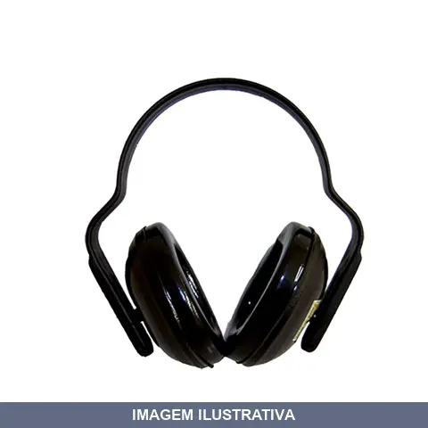
ABAFADOR RUIDO 13DB
Indicação de Uso: Redução de ruído em ferramentas e equipamentos. Material e Resistência: Construído em plástico. Vantagem Prática: Abafa ruído em até 13dB, reduzindo o incômodo sonoro durante o uso de máquinas e ferramentas.
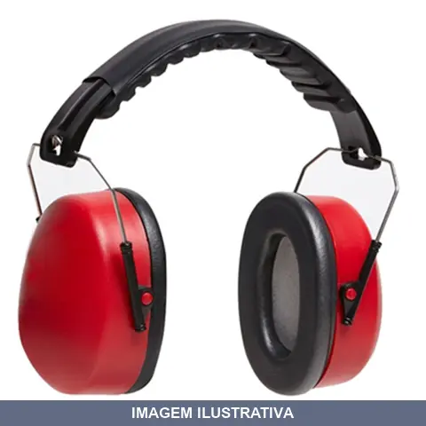
ABAFADOR RUIDO 3M 21DB
Protetor auditivo tipo abafador (concha) com atenuação de 21 dB (NRRsf). Indicação de Uso: proteção auditiva em ambientes com ruído. Material e Resistência: estrutura dobrável com almofadas externas e espuma interna, facilitando armazenamento e transporte. Vantagem Prática: design dobrável para fácil guarda, almofadas anatômicas que reduzem entrada de partículas, kit de reposição de peças disponível. Certificação: CA 14235.
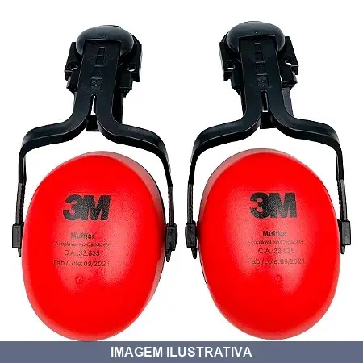
ABAFADOR RUIDO MUFFLER PARA CAPACETE 3M
Indicação de Uso: Protetor auditivo tipo concha para ambientes industriais e de alta intensidade sonora, acoplável a capacetes de segurança. Aplicável em setores de construção civil, indústria geral e atividades com ruídos perigosos. Material e Resistência: Duas conchas em plástico com almofadas de espuma internas e laterais, haste de plástico rígido almofadado com estrutura em metal. Nível de redução de ruído (NRRsf)
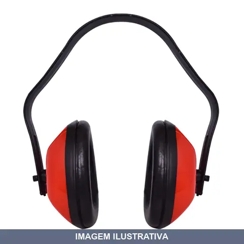
ABAFADOR RUIDO SC BRASFORT
Utilizar em locais onde o nível de ruído é muito elevado ultrapassando 85 decibéis. Espuma, vinil e PVC.
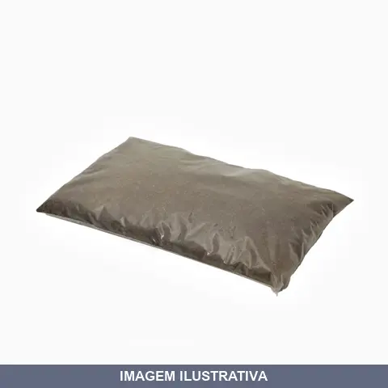
ABSORVENTE NATURAL TURFA SEGMENTO
Indicação de Uso: Absorção de óleos e derivados de petróleo em ambientes industriais, manutenção e resposta ambiental. Material e Resistência: Produto à base de fibras vegetais, 100% natural, biodegradável, hidrofóbico (não absorve água), não tóxico, não abrasivo, não propaga chamas, capacidade de absorção de até 6,25 litros de óleo por quilograma. Vantagem Prática: Leve, fácil aplicação e manuseio, não oferece riscos ao meio ambiente, sem prazo de validade.
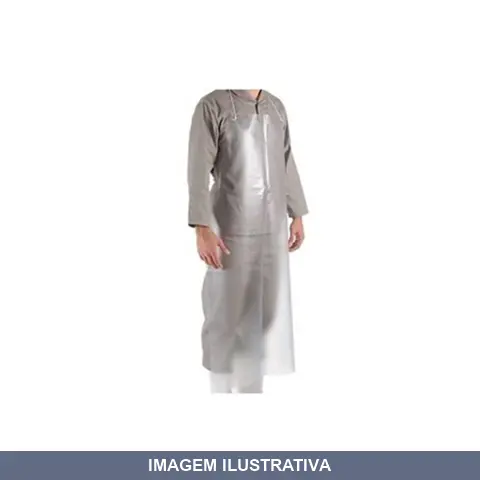
AVENTAL PVC , TRANSPARENTE MAICOL
Indicação de Uso: Proteção do corpo durante trabalhos que envolvem respingos de água, líquidos e sujeira. Ideal para atividades de limpeza, manipulação de produtos químicos e trabalhos em ambientes úmidos. Material e Resistência: Fabricado em PVC, material impermeável e resistente a umidade. Vantagem Prática: Proporciona proteção eficiente contra respingos e umidade, mantendo o usuário seco e protegido durante suas atividades.
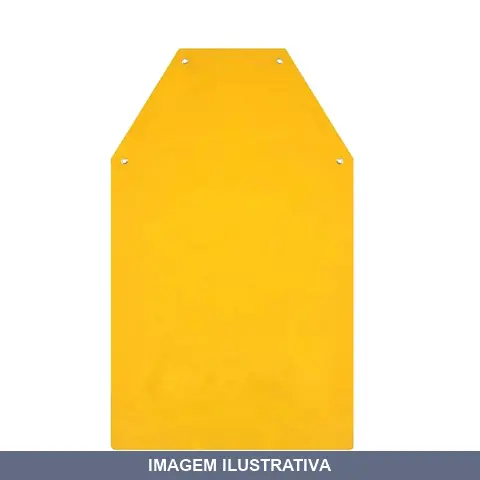
AVENTAL PVC .2OX0. AMARELO PLASTCOR
Indicação de Uso: Avental de proteção indicado para trabalhos em ambientes úmidos, com produtos químicos ou durante atividades de limpeza e manipulação de materiais. Material e Resistência: Confeccionado em PVC, oferece resistência à água e a produtos químicos comuns. Vantagem Prática: Protege roupas e o usuário contra respingos e umidade durante o trabalho.
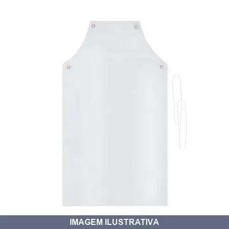
AVENTAL PVC .2OX0. BRANCO PLASTCOR
Avental de proteção confeccionado em PVC, material resistente à umidade e respingos. Indicado para uso em atividades que exigem proteção do corpo contra líquidos, produtos químicos e sujeira. Versátil para aplicações em limpeza, manipulação de tintas, processos úmidos e trabalhos gerais.
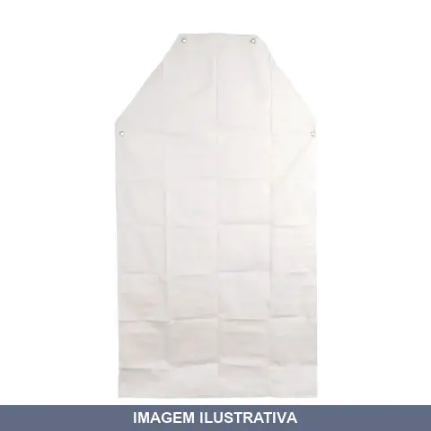
AVENTAL PVC .2OX0. CRISTAL PLASTCOR
Indicação de Uso: Proteção do tronco contra respingos e umidade em operações com água, adequado para ambiente alimentício, laboratorial e de limpeza. Material e Resistência: PVC laminado cristal (transparente) com ilhoses e cordão de polipropileno. Resistente e impermeável. Vantagem Prática: Material fácil de limpar e confecção soldada ou com ilhoses oferece proteção eficaz das regiões do peito, cintura e pernas.
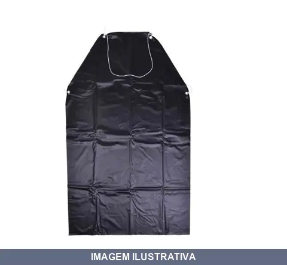
AVENTAL PVC .2OX0. PRETO PLASTCOR
Indicação de Uso: Proteção do usuário durante atividades que envolvem respingos de água, produtos químicos ou sujeira, como limpeza, manipulação de materiais úmidos e trabalhos em pintura. Material e Resistência: Confeccionado em PVC, oferece impermeabilidade e resistência à umidade. Vantagem Prática: Facilita a higiene ao proteger roupas e o corpo durante tarefas molhadas ou sujas.
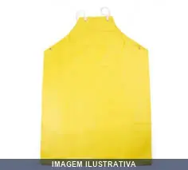
AVENTAL PVC AMARELO FORRO SEGMENTO
Avental em PVC amarelo com forro interno, indicado para proteção do vestuário durante trabalhos com umidade, respingos e sujeira. Material resistente e fácil de limpar, adequado para uso em cozinhas, limpeza, jardinagem e atividades similares.
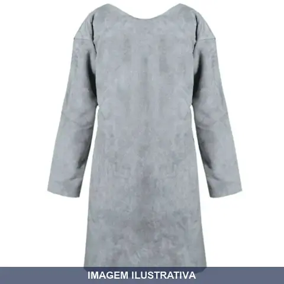
AVENTAL RASPA BARBEIRO LUMA
Avental em raspa destinado ao uso em barbearias e salões. Material resistente indicado para proteção durante serviços de corte e acabamento. Proporciona proteção do vestiário contra respingos e desgaste do trabalho diário.

AVENTAL RASPA LUMA
Avental de raspa para proteção do corpo durante trabalhos que geram respingos, faíscas ou abrasão. Confeccionado em couro tipo raspa, material resistente e durável. Indicado para soldagem, trabalhos com ferramentas, pintura e atividades gerais de manutenção e construção.
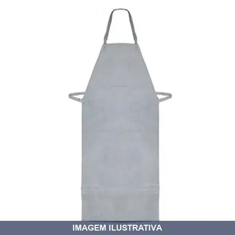
AVENTAL RASPA QUALITY
Avental de raspa sem emenda, dimensões 1,20m x 0,60m, confeccionado em couro raspa com tiras em raspa para fixação no pescoço e cintura. Indicado para proteção contra respingos de solda, agentes abrasivos, escoriantes e térmicos. Recomendado para soldagem, metalurgia e trabalhos na construção civil.
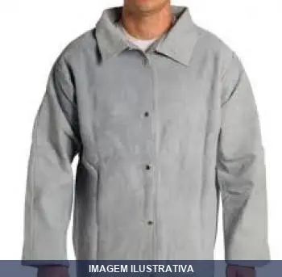
BLUSAO DE RASPA PARA SOLDA G
Indicação de Uso: Proteção do tronco e membros superiores contra agentes abrasivos, escoriantes e térmicos em atividades de soldagem, indústrias metalúrgicas, siderúrgicas e marmorarias. Material e Resistência: Raspa de couro bovino curtido ao cromo, com espessura média de 1,50 mm. Costurado com fio 100% algodão ou aramida, com costuras reforçadas. Vantagem Prática: Fechamento frontal em velcro para ajuste confortável. Gola alta e elástico
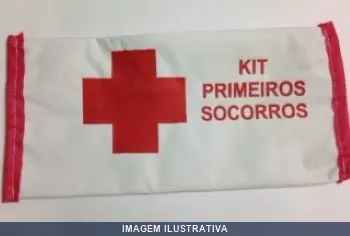
BOLSA PARA KIT PRIMEIROS SOCORROS PLASTCOR
Bolsa de transporte e armazenamento especificamente projetada para acondicionar kits de primeiros socorros. Fabricada em plástico resistente. Mantém os itens de primeiros socorros organizados e protegidos, facilitando o transporte e o acesso rápido em situações de emergência.

BOLSA PARA KIT SEGURANCA GRANDE X30 SEGMENTO
Bolsa de transporte e armazenamento específica para kits de segurança e equipamentos de proteção individual. Confeccionada em nylon resistente, oferece compartimentos funcionais para organização de itens de EPI. Ideal para profissionais que necessitam carregar e manter acessíveis equipamentos de segurança no canteiro de obras, indústria ou serviços em altura.
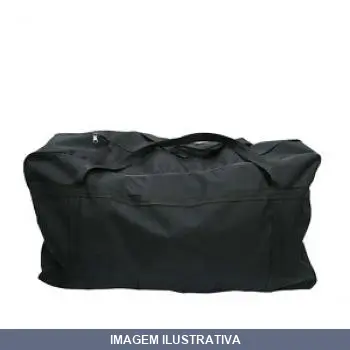
BOLSA PARA KIT SEGURANCA MEDIA X30 SEGMENTO
Bolsa para kit segurança, ideal para organizar e transportar equipamentos de proteção individual e ferramentas de trabalho. Confeccionada em material resistente, oferece compartimentos funcionais para melhor organização dos itens de segurança necessários em diversos ambientes de trabalho.
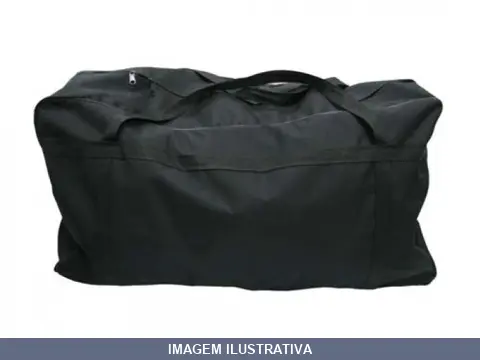
BOLSA PARA KIT SEGURANCA PEQUENA X25 SEGMENTO
Bolsa de transporte e armazenamento desenvolvida para organizar e proteger itens de kit de segurança. Estrutura resistente adequada para uso em obra, canteiro, indústria e ambientes profissionais diversos. Facilita o deslocamento e a identificação dos equipamentos de proteção individual.
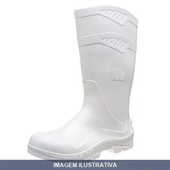
BOTA PVC BRANCA CANO LONGO COM FORRO MARLUVAS
Bota de PVC branca com cano longo e forro interno. Indicada para trabalhos em ambientes úmidos, com água ou produtos químicos. Material PVC oferece proteção contra umidade e facilita limpeza. Forro proporciona conforto e absorção de transpiração.
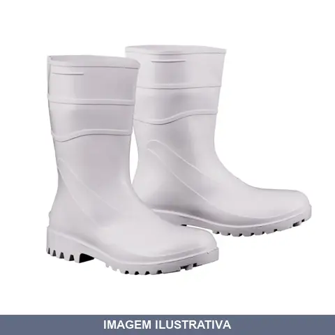
BOTA PVC BRANCA CANO MEDIO COM FORRO
Indicação de Uso: Alimentícia (cozinha industrial), hospital, higiene, frigoríficos, limpeza e laboratório químico. Material e Resistência: Fabricada em PVC impermeável, injetada em uma só peça, com forro interno. Resistente ao escorregamento em pisos cerâmico e aço, além de resistência a óleo combustível. Solado antiderrapante. Vantagem Prática: Fácil higienização e limpeza, altura de cano de 26cm protegendo o tornozelo.

BOTA PVC BRANCA CANO MEDIO SEM FORRO WORKER
Indicação de Uso: Alimentícia (cozinha industrial), hospital, higiene, frigoríficos, limpeza e laboratório químico. Material e Resistência: Construída em PVC com solado antiderrapante. Impermeável e resistente a produtos químicos, oferecendo proteção contra água e outros líquidos. Cano com 26 cm de altura. Vantagem Prática: Sem forro proporciona ventilação e facilita a secagem, tornando-a prática para ambientes úmidos.
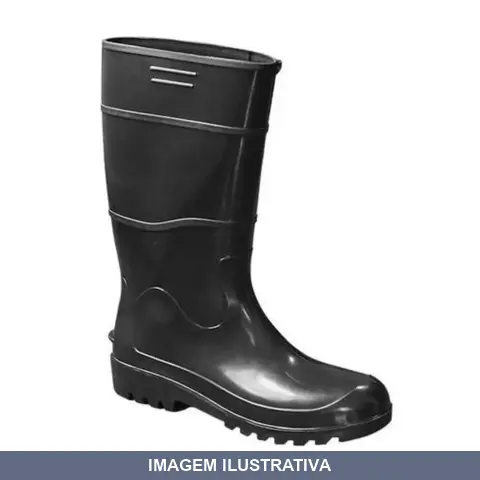
BOTA PVC PRETA CANO LONGO SEM FORRO WORKER
Indicação de Uso: Agronegócio, construção civil, indústria, postos de combustível, limpeza e conservação. Material e Resistência: Confeccionada em PVC com solado antiderrapante. Impermeável com cano longo de aproximadamente 34 cm. Vantagem Prática: Design sem forro facilita limpeza e secagem. Proteção adicional aos tornozelos e parte inferior das pernas.

BOTA PVC PRETA CANO MEDIO COM FORRO
Indicação de Uso: Proteção dos pés em ambientes úmidos, molhados e com risco de respingos químicos. Vantagem Prática: Forro interno proporciona conforto e absorção de umidade. Material e Resistência: Confeccionada em PVC resistente a umidade e agentes químicos comuns.
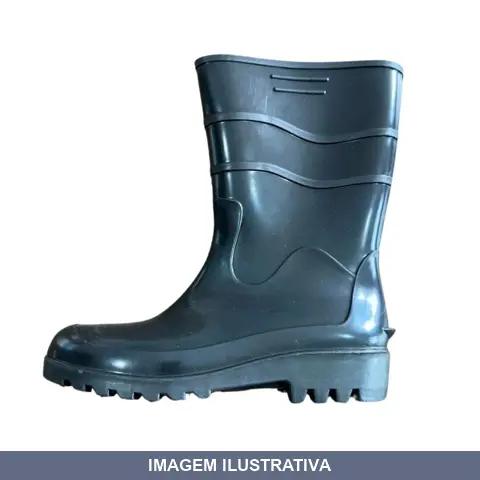
BOTA PVC PRETA CANO MEDIO SEM FORRO
Indicação de Uso: Construção civil, agronegócio, postos de combustível, saneamento básico e indústrias em geral. Proteção contra riscos de natureza leve, umidade e agentes químicos leves. Material e Resistência: Fabricada em PVC injetado impermeável, com alta resistência a produtos químicos e óleo combustível. Sola antiderrapante e resistente a escorregamento. Vantagem Prática: Design sem forro facilita limpeza e higienização. Cano médio proporciona proteção

BOTINA COM BICO AÇO E BIDENS VULCAFLEX MARLUVAS
Botina de segurança com bico de aço para proteção frontal. Solado vulcanizado oferecendo flexibilidade e aderência. Indicada para trabalhos em construção, indústria e atividades que exigem proteção dos pés contra impactos e objetos contundentes.

BOTINA COM BICO AÇO E BIDENS WORKER
Botina de segurança com fechamento em elástico e biqueira de aço. Palmilha em EVA com sistema de montagem strobel. Solado bidensidade em poliuretano. Couro com estampa relax. Indicação de Uso: Proteção dos pés em ambientes de trabalho. Material e Resistência: Biqueira de aço, solado resistente. Vantagem Prática: Conforto e durabilidade para jornadas prolongadas.
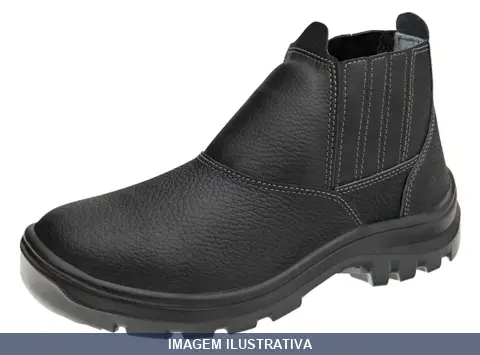
BOTINA COM BICO PVC BIDENS
Indicação de Uso: Calçado ocupacional de uso profissional, tipo botina, para proteção em ambientes com riscos de natureza leve e agentes abrasivos. Material e Resistência: Confeccionada em couro curtido ao cromo, bico de PVC, solado de poliuretano bidensidade com resistência ao escorregamento e ao óleo combustível, palmilha antibacteriana com absorção de umidade. Vantagem Prática: Fechamento em elástico para calce rápido, dorso acolchoado, sobrepalmilha em EVA para

BOTINA COM BICO PVC BIDENS NEW PRIME MARLUVAS
Botina com bico de proteção em PVC. Indicada para trabalhos em ambientes úmidos, com risco de respingos de água e produtos químicos. Material resistente oferece proteção aos pés e dedos. Apropriada para uso em obra, indústria e atividades de limpeza.

BOTINA COM BICO PVC BIDENS VULCAFLEX MARLUVAS
Botina de segurança com bico de proteção em PVC. Indicada para trabalhos em ambientes úmidos, químicos e com risco de impacto nos pés. Material resistente à abrasão e produtos químicos. Proporciona proteção contra objetos perfurantes e esmagamento dos dedos.
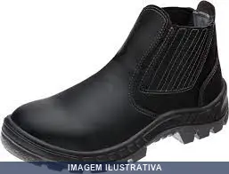
BOTINA COM BICO PVC MICROFIBRA MARLUVAS
Indicação de Uso: Profissionais em agroindústria, construção civil, mecânica, montadoras, prestadoras de serviços e serviços gerais. Material e Resistência: Cabedal em microfibra de alta performance, resistente à água e lavável. Biqueira de PVC. Colarinho acolchoado com forração. Solado PU bidensidade com absorção de impacto. Vantagem Prática: Palmilha higiênica antibacteriana proporciona transpiração e absorção do suor.
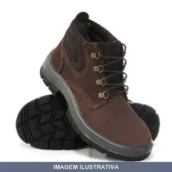
BOTINA NOBUCK BIDENS CAFE KALA
Botina de segurança em couro nobuck, cor marrom café. Confeccionada de acordo com norma NBR ISO 20347. Solado de PU bidensidade com resistência a óleo combustível. Palmilha antibacteriana. Fechamento com cadarço. CA 30258. Adequada para proteção dos pés contra riscos leves, agentes abrasivos e escoriantes em ambientes de trabalho.
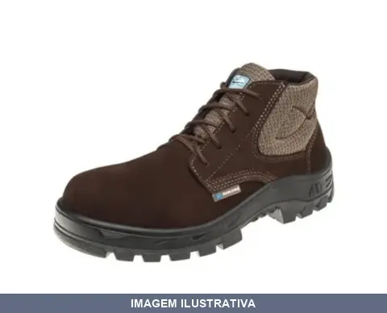
BOTINA NOBUCK BIDENS CAFE MARLUVAS
Indicação de Uso: Proteção em ambientes administrativos, mecânicos, montadoras e serviços gerais. Material e Resistência: Couro nobuck com estrutura fibrosa e microporosa. Solado em poliuretano bidensidade com sistema de absorção de impacto. Biqueira em polipropileno. Fechamento em cadarço. CA 45611. Vantagem Prática: Colarinho e lingueta acolchoados proporcionam conforto. Solado resistente ao óleo combustível e antiderrapante.
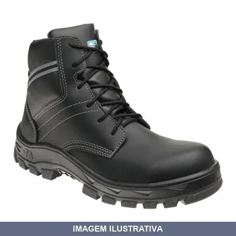
BOTINA NOBUCK BIDENS COMPOSITE PRETA MARLUVAS
Botina de segurança com solado composite e nobuck preto. Indicada para uso profissional em ambientes que exigem proteção dos pés. Material resistente e durável. Solado composite oferece leveza e flexibilidade na movimentação.
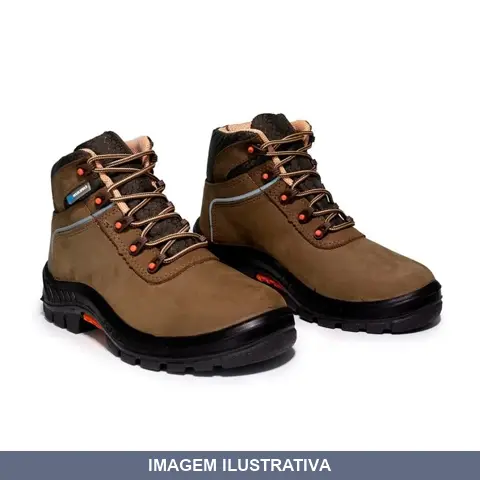
BOTINA NOBUCK BIDENS PREMIER MARROM MARLUVAS
Indicação de Uso: Áreas administrativas, indústrias de baixo risco, lazer e esportes leves. Material e Resistência: Couro nobuck marrom, solado em poliuretano (PU) bidensidade com sistema TPU anti-torsion, biqueira de polipropileno, forração em tecido poliéster respirável, fechamento em cadarço com ganchos de nylon. Vantagem Prática: Absorção de impactos, antiderrapante (SRC), alivio de fadiga plantar, estabilidade em terrenos irregulares.
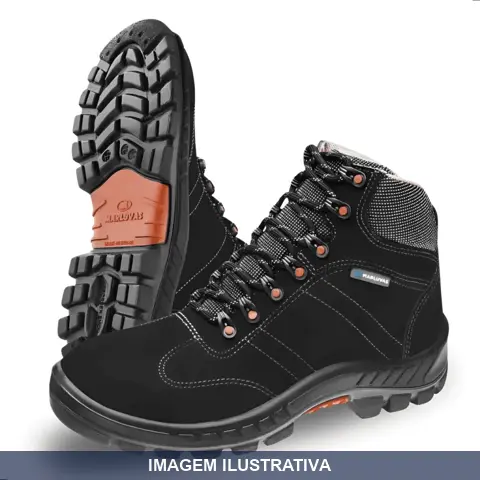
BOTINA NOBUCK BIDENS PREMIER PRETA MARLUVAS
Botina de segurança em nobuck, indicada para proteção dos pés em ambientes de trabalho industrial, construção civil e operações que envolvem risco. Material nobuck oferece resistência à abrasão e durabilidade. Apropriada para uso prolongado em atividades que exigem EPI de proteção para os membros inferiores.
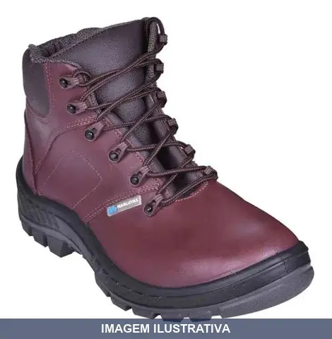
BOTINA NOBUCK BIDENS RODOCK MARROM MARLUVAS
Botina em nobuck para uso em atividades que exigem proteção e durabilidade. Material resistente indicado para trabalhos em obra, construção e áreas de risco. Oferece proteção aos pés com construção reforçada em couro nobuck.
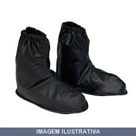
BOTINA PARA MOTOQUEIRO/POLAINAS G MAICOL
Polainas impermeáveis para motoqueiro, destinadas à proteção dos pés e calçados contra chuva durante a condução de motocicletas. Oferecem cobertura estendida que protege contra umidade e respingos de água. Apropriadas para uso em moto, passeios e trajetos urbanos.
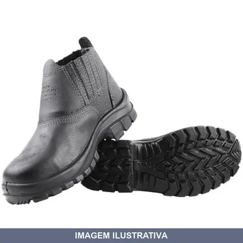
BOTINA SEM BICO AÇO ELASTICO MONODENS
Indicação de Uso: Proteção contra riscos de natureza leve e agentes abrasivos e escoriantes em ambientes de trabalho. Material e Resistência: Couro curtido ao cromo com solado em poliuretano monodensidade, injetado em camada única. Fechamento com elástico lateral. Palmilha de montagem no sistema strobel. Resistente ao escorregamento em pisos contaminados com detergente (SRA). Vantagem Prática: Facilita o calce, oferece ajuste seguro com flexibilidade e conforto no uso prolongado.
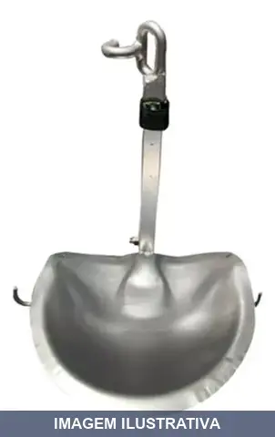
CADEIRA CEL ANATOMICA MOLA PEQUENA DESCIDA
Indicação de Uso: Trabalhos de pedreiro, alvenaria, reboco e pintura em fachadas e estruturas. Material e Resistência: Assento anatômico com molas de tração, capacidade de carga até 120 kg. Vantagem Prática: Equipamento leve e portátil com dupla trava de segurança para fixação estável durante o trabalho.
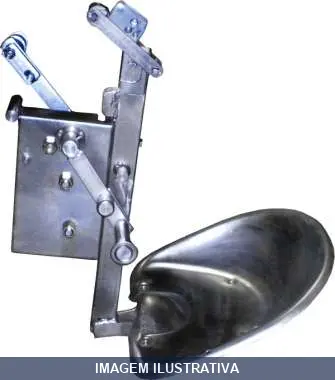
CADEIRA SUSPENSA SOBE E DESCE
CADEIRA SUSPENSA ANATOMICA PARA CABO DE AÇO 1/4'' CADEIRA DE ACORDO COM NORMA 14751/11, OBRIGATORIO REVISÃO A CADA 12 MESES CONFORME A NORMA. CAPACIDADE MAXIMA RECOMENDADA 120 KG DEVE SER USADA JUNTO COM O CINTO TRAVA QUEDAS E CINTOS PARAQUEDISTA.
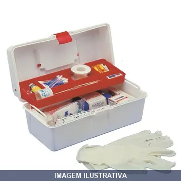
CAIXA MEDICAMENTO BR LAGUNA
Caixa organizadora para armazenamento de medicamentos e itens de primeiros socorros, como gazes, algodão, esparadrapo e luvas. Ideal para uso doméstico, empresarial ou em veículos. Estrutura resistente que facilita a separação e localização de itens.

CALCA DE PVC PRETA POP G MAICOL
Calça de PVC preta, indicada para proteção em trabalhos com umidade, produtos químicos e ambientes molhados. Material em PVC oferece resistência à água e à abrasão. Vantagem prática: fácil limpeza e durabilidade em condições adversas.
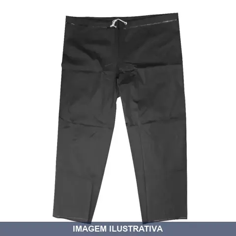
CALCA DE PVC PRETA POP GG MAICOL
Calça de proteção confeccionada em PVC, material resistente à umidade e de fácil limpeza. Indicada para trabalhos em ambientes úmidos, na construção civil, jardinagem e demais atividades que exigem proteção contra respingos e sujeira. Cor preta.
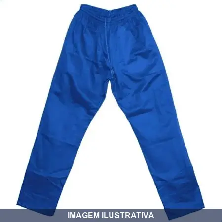
CALCA MASCULINA BRIM AZUL ROYAL
Calça masculina em brim azul royal, indicada para uso profissional em ambientes de trabalho, oficinas e canteiros de obra. Material resistente e durável, adequado para atividades que exigem proteção e conforto. Prática para uso diário em trabalhos manuais e operacionais.

CALCA MASCULINA BRIM CINZA COM FAIXA VERDE G
Indicação de Uso: Trabalho em ambientes industriais e áreas que exigem visibilidade. Material e Resistência: Brim pesado 100% algodão com costura reforçada em pesponto. Cós elástico total com cordão de ajuste. Dois bolsos frontais, dois traseiros e um bolso cargo na perna direita. Vantagem Prática: Faixa refletiva verde nas regiões dianteira e traseira para melhor visibilidade em ambientes com pouca luminosidade.

CALCA MASCULINA BRIM CINZA COM FAIXA VERDE GG
Calça masculina em brim cinza com faixa verde. Indicação de Uso: vestuário de trabalho para ambientes internos e externos, adequado para atividades que exigem conforto e resistência. Material e Resistência: fabricada em brim, tecido resistente e durável. Vantagem Prática: faixa verde facilita visibilidade e identificação do usuário.
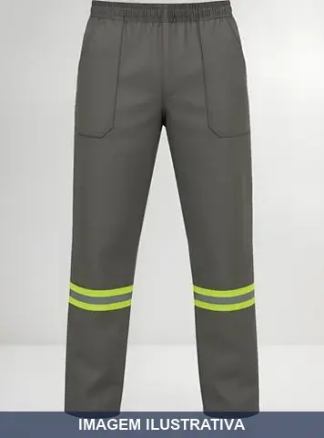
CALCA MASCULINA BRIM CINZA COM FAIXA VERDE M
Calça masculina de trabalho confeccionada em brim pesado 100% algodão, cor cinza com faixa refletiva verde fluorescente nas pernas. Tamanho M. Dotada de cós elástico total com cordão de ajuste, dois bolsos frontais, dois traseiros e um bolso cargo. Faixa refletiva com costura dupla em conformidade com ABNT NBR 15292.
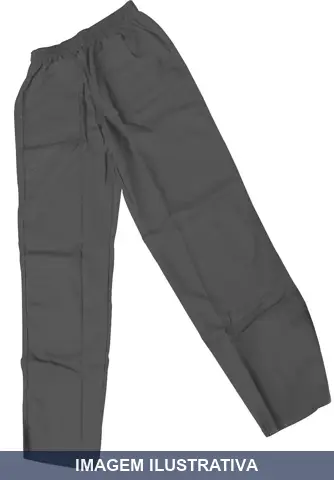
CALCA MASCULINA BRIM CINZA EGG
CALÇA MASCULINA BRIM CINZA MEDIO G CALÇA MASCULINA BRIM CINZA CEDRO 8047 G3 TAM: G
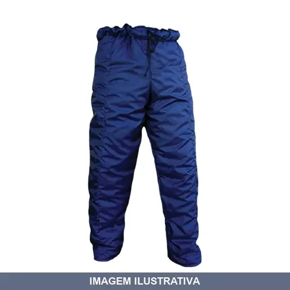
CALCA PARA CAMARA FRIA AZUL GG
Indicação de Uso: Proteção em ambientes de câmara fria, frigoríficos e indústrias alimentícias com temperaturas abaixo de -5ºC. Material e Resistência: Confeccionada em náilon com forro interno em manta térmica de poliéster. Apresenta acabamento externo liso e interno matelado, com fechamento por cordão de ajuste na cintura. Vantagem Prática: Oferece conforto e segurança para proteção dos membros inferiores em ambientes refrigerados.
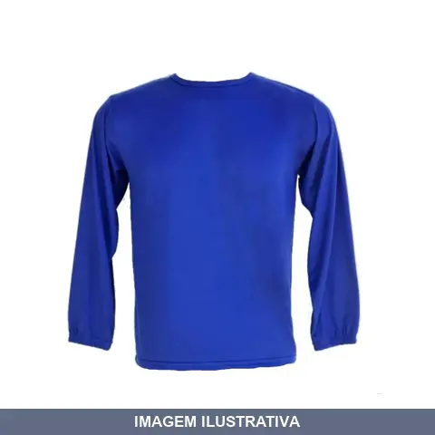
CAMISETA MANGA LONGA AZUL ROYAL
Camiseta de manga longa em poliéster e viscose, cor azul royal. Indicação de Uso: Vestuário de trabalho para ambientes diversos. Material e Resistência: Tecido misto resistente ao uso contínuo. Vantagem Prática: Conforto e proteção durante jornada de trabalho.

CAMISETA POLO DET GOLA RETILINEA COM BOLSO BORDADO CINZA BG
Camiseta polo com gola retilinea, bolso bordado e acabamento em cinza. Indicada para uso em ambientes corporativos, comerciais e de trabalho. Possui gola estruturada e bolso frontal com detalhe bordado.
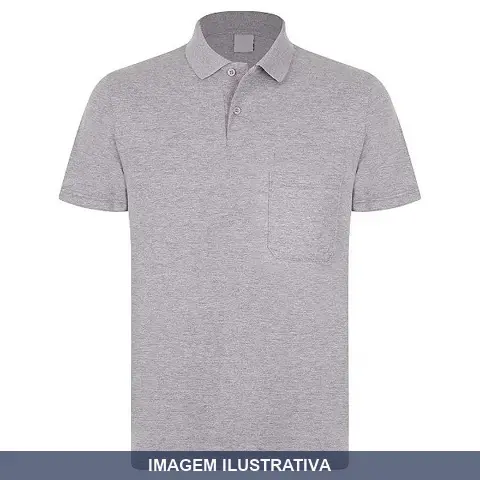
CAMISETA POLO DET GOLA RETILINEA COM BOLSO BORDADO CINZA BGG
Camiseta polo de gola retilinea com bolso bordado na cor cinza. Vestuário de trabalho adequado para uso corporativo, uniforme empresarial e ambientes profissionais. Proporciona conforto e apresentação padronizada durante a jornada de trabalho.

CAMISETA POLO DET GOLA RETILINEA COM BOLSO BORDADO CINZA BM
Camiseta polo de gola retilínea com bolso liso para vestuário de trabalho. Indicação de Uso: ambientes profissionais e corporativos. Material e Resistência: gola estruturada que mantém forma após múltiplas lavagens; bolso com acabamento resistente. Vantagem Prática: peça versátil para uniforme corporativo.

CAMISETA POLO DET GOLA RETILINEA COM BOLSO BORDADO CINZA BP
Camiseta tipo polo com gola retilínea e bolso liso, sem bordado. Indicada para uso profissional e casual. Confeccionada em material apropriado para vestuário. Oferece conforto e praticidade no dia a dia com detalhe de bolso funcional.

CAMISETA POLO DET GOLA RETILINEA COM BOLSO BORDADO CINZA G
Camiseta polo com gola retilinea, confeccionada em material de algodão ou poliéster. Possui bolso bordado no peito. Indicada para uso profissional, corporativo ou casual. Proporciona conforto e apresentação adequada em ambientes de trabalho e atividades diárias. Ideal para uniformização de equipes e uso pessoal.

CAMISETA POLO DET GOLA RETILINEA COM BOLSO BORDADO CINZA GG
Camiseta polo de vestuário para trabalho com gola retilinea e bolso bordado. Indicada para uso em ambientes comerciais, industriais e uniforme profissional. Gola com acabamento que mantém a forma após lavagens. Bolso bordado agrega funcionalidade e acabamento visual.

CAMISETA POLO DET GOLA RETILINEA COM BOLSO BORDADO CINZA M
Camiseta polo com gola retilinea e bolso bordado. Adequada para uso profissional, corporativo ou casual. Presenta bolso funcional e acabamento em gola estruturada.

CAMISETA POLO DET GOLA RETILINEA COM BOLSO BORDADO CINZA P
Camiseta polo com gola retilinea, ideal para uso profissional em ambientes de trabalho. Apresenta bolso bordado na região do peito. Cor cinza. Apropriada para equipes e atividades que exigem uniformização.

CAPA CHUVA AMARELA FORRADA G PLASTCOR
Capa de chuva amarela forrada, tamanho G. Indicada para proteção contra chuva em atividades externas e trabalhos expostos à intempérie. Confeccionada em material plástico com forro interno, oferecendo proteção dupla e maior conforto. Cor amarela facilita a visibilidade do usuário em ambientes com pouca luminosidade.

CAPA CHUVA AMARELA FORRADA GG PLASTCOR
Indicação de Uso: Proteção contra chuva e intempéries. Material e Resistência: Confeccionada em plástico, com forro interno. Vantagem Prática: Protege o usuário da água mantendo conforto térmico com o forro.

CAPA CHUVA AMARELA FORRADA XG MAICOL
Capa de chuva na cor amarela, forrada internamente. Indicada para proteção contra chuva e intempéries em atividades externas. Material resistente com forro que oferece conforto adicional durante o uso prolongado. Facilita a visualização do usuário em ambientes com pouca luminosidade devido à cor amarela.
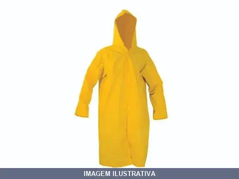
CAPA CHUVA AMARELA FORRADA XXG MAICOL
Capa de chuva em PVC amarelo com forro interno, ideal para proteção contra chuva em atividades externas. Material resistente de PVC impermeável com forro que proporciona maior conforto e durabilidade. Oferece proteção eficaz contra intempéries em trabalhos ao ar livre.

CAPA CHUVA AMARELA LAMINADA G PLASTCOR
Indicação de Uso: Proteção contra chuva em atividades outdoor, construção civil, obras e serviços gerais. Material e Resistência: Confeccionada em PVC laminado com mangas compridas e capuz para cobertura completa. Fechamento frontal com botões em plástico. Costura por solda eletrônica para maior durabilidade. Vantagem Prática: Reutilizável e de fácil armazenamento (dobrável). Oferece proteção completa contra intempéries e umidade.
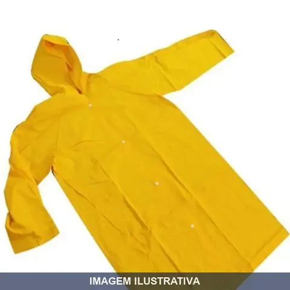
CAPA CHUVA AMARELA LAMINADA GG PLASTCOR
Indicação de Uso: Proteção contra chuva e intempéries em atividades externas e trabalhos em campo. Material e Resistência: Confeccionada em material laminado, oferece resistência à água. Vantagem Prática: Cor amarela facilita a visibilidade do usuário em ambientes com pouca iluminação.
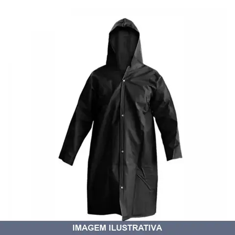
CAPA CHUVA PRETA FORRADA G PLASTCOR
Indicação de Uso: Proteção contra chuva e umidade em atividades ao ar livre e profissionais. Material e Resistência: Confeccionada em PVC com forro interno de poliéster, solda eletrônica nas costuras, mangas longas, capuz e fechamento com botões de pressão. Vantagem Prática: Oferece impermeabilidade e conforto térmico, cobrindo tronco, braços e parte superior do corpo.
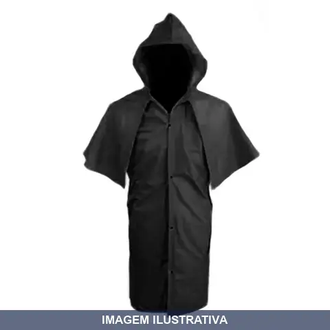
CAPA CHUVA PRETA FORRADA GG MORCEGO PLASTCOR
Capa de chuva em PVC forrada, modelo morcego tamanho GG. Indicada para proteção contra chuva durante atividades externas e trabalhos em ambientes abertos. Material plástico resistente com forro interno para maior conforto e durabilidade.

CAPA CHUVA PRETA FORRADA GG PLASTCOR
Capa de chuva preta com forro, tamanho GG. Proporciona proteção contra chuva e umidade. Confeccionada em material plástico. Indicada para uso em atividades ao ar livre e trabalhos em condições climáticas adversas.
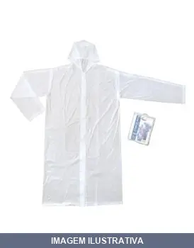
CAPA CHUVA TRANSPARENTE DESCARTAVEL RIPLAS
Indicação de Uso: Proteção contra chuva em atividades externas, eventos ao ar livre e situações emergenciais. Largura 80 cm, comprimento 1,20 m. Material e Resistência: Laminado de polietileno, 3 micras de espessura, transparente, com capuz e mangas. Vantagem Prática: Leve e fácil de transportar, não requer armazenamento.
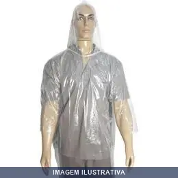
CAPA CHUVA TRANSPARENTE LAMINADA G NIKOKIT
Indicação de Uso: Proteção contra chuva e umidade em atividades externas e trabalhos em ambientes abertos. Material e Resistência: Confeccionado em material laminado transparente, oferecendo resistência à água. Vantagem Prática: Permite visualização clara durante o uso, mantendo o corpo seco e protegido da chuva.
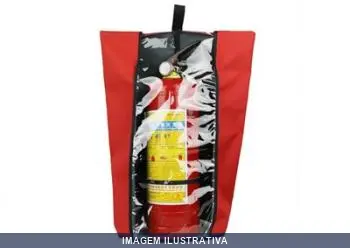
CAPA PARA EXTINTORES SEGMENTO
Indicação de Uso: Proteção de equipamentos de combate a incêndio contra poeira, umidade, intempéries e agentes externos. Material e Resistência: Disponível em diferentes materiais como PVC, lona Sanlux, plástico Bagum ou PVC reforçado, de fácil limpeza e longa durabilidade. Vantagem Prática: Visor frontal transparente permite visualizar informações do extintor sem remover a capa. Oferece fechamento com velcro ou cadarço, facilitando sua aplicação e remoção.
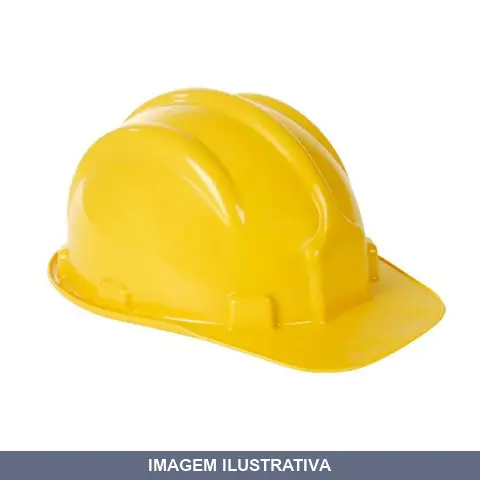
CAPACETE ABA FRONTAL AMARELO PLASTCOR
Indicação de Uso: Proteção da cabeça contra impactos e quedas de objetos em ambientes de trabalho. Material e Resistência: Copa injetada em polietileno de alta densidade com estrias, suspensão em polietileno de baixa densidade, tira absorvente de suor. Classe B, C.A. 31.469, atende norma ABNT NBR 8221:2003. Vantagem Prática: Aba frontal proporciona proteção adicional para a face. Carneira de PVC com ajuste traseiro oferece conforto e adaptabilidade à circunferência da cabeça.
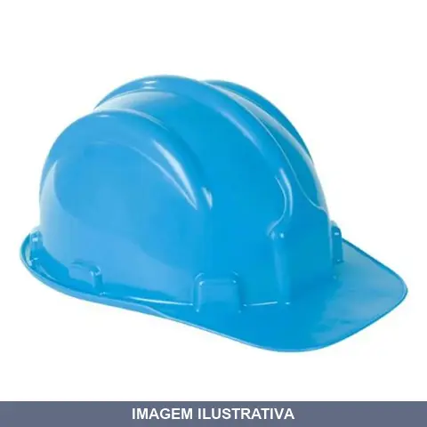
CAPACETE ABA FRONTAL AZUL CLARO PLASTCOR
Capacete de segurança com aba frontal em polietileno de alta densidade, cor azul claro. Copa com estrias e slots laterais para acoplamento de protetor facial e auditivo. Suspensão em 6 pontos com tira absorvente de suor em TNT dublado. Atende norma ABNT NBR 8221 classe B. Indicado para construção civil, indústrias químicas e petroquímicas, mineração.
CAPACETE ABA FRONTAL AZUL ESC AJUS FACIL SH700 3M
Indicação de Uso: Proteção da cabeça contra impactos de pequenos objetos e perfurações. Indicado para indústrias em geral, mineração, construção civil e trabalhos com energia elétrica (Classe B, CA 29638). Material e Resistência: Casco em polietileno de alta densidade. Aba frontal tipo II. Suspensão com ajuste fácil (uma mão) e jugular em tecido. Fendas laterais para compatibilidade com protetores auditivos e proteção facial. Vantagem Prática: Ajuste simples com uma mão. Peças de reposição
CAPACETE ABA FRONTAL AZUL ESCURO PLASTCOR
Capacete de segurança com aba frontal, copa com estrias em polietileno de alta densidade e slot para acoplamento de protetores facial e auditivo. Suspensão em polietileno de baixa densidade com tira absorvente de suor em TNT dublado. Classe B, certificação CA 31469, proteção contra impactos e risco elétrico até 30 kV. Indicado para construção civil, indústrias, mineração e trabalhos com riscos de impacto.
CAPACETE ABA FRONTAL AZUL MARINHO MSA
Capacete de proteção com aba frontal em cor azul marinho. Indicado para trabalhos em altura, obras, canteiros de obra e ambientes onde há risco de impacto na cabeça. Oferece proteção frontal ampliada pela aba. Adequado para uso em segurança do trabalho.
CAPACETE ABA FRONTAL BRANCO AJUS FACIL SH700 3M
Capacete de segurança com aba frontal, moldado em polietileno de alta densidade. Suspensão com ajuste fácil (deslizante) em nylon e polietileno. Inclui tira de absorção de suor e tira jugular. Possui dois slots laterais para acessórios como protetores auditivos e proteção facial. Indicado para proteção contra impactos em indústrias, mineração e construção civil.
CAPACETE ABA FRONTAL BRANCO COM ABAFADOR PLASTCOR
Capacete de segurança classe B com aba frontal branco, fabricado em polietileno de alta densidade. Suspensão em peça única de polietileno de baixa densidade com tira absorvente de suor. Possui slots para acoplamento de protetor facial e auditivo. Indicado para proteção contra impactos em construção civil, indústria e mineração. Atende ABNT NBR 8221:2003.
CAPACETE ABA FRONTAL BRANCO PLASTCOR
Capacete de segurança para uso na indústria, classe B, tipo II, com aba frontal para proteção adicional contra impactos e exposição solar. Copa injetada em polietileno de alta densidade com estrias, suspensão em polietileno de baixa densidade, tira absorvente de suor e regulagem por pinos. Possui slots laterais para acoplamento de protetor facial ou auditivo. Atende norma ABNT NBR 8221:2003 e possui Certificado de Aprovação CA 31.469.
CAPACETE ABA FRONTAL CINZA AJUS FACIL SH700 3M
Indicação de Uso: Proteção da cabeça contra impactos de pequenos objetos e perfurações em ambientes de trabalho em geral, indústrias, mineração e construção civil. Material e Resistência: Fabricado em polietileno de alta densidade com aba frontal que aumenta a área de proteção. Possui jugular em tecido e sistema de suspensão com ajuste fácil, adaptável a diferentes tamanhos de cabeça. Vantagem Prática: Fendas laterais para compatibilidade com protetores auditivos e proteção facial. Permite
CAPACETE ABA FRONTAL CINZA UNICO
Indicação de Uso: Proteção de cabeça em ambiente industrial. Material e Resistência: Casco injetado em polietileno de alta densidade com aba frontal. Suspensão Push-Key com cinta dupla em poliamida, carneira em PEAD e testeira absorvedora de suor em laminado de PVC. Jugular em tecido. Certificado C.A. 498. Vantagem Prática: Casco leve, balanceado para conforto de uso prolongado, com slots laterais para acoplagem de
CAPACETE ABA FRONTAL CINZA UNICO [023809]
Capacete de segurança tipo II, classe B, com aba frontal. Confeccionado em polietileno de alta densidade, com copa em estrias e slot para acoplamento de protetor facial e auditivo. Suspensão em polietileno de baixa densidade com tira absorvente de suor. Atende norma ABNT NBR 8221. Indicado para proteção contra impactos, penetração e choques elétricos em construção civil, indústrias químicas e demais ambientes industriais.
CAPACETE ABA FRONTAL LARANJA PLASTCOR
Capacete de segurança com aba frontal, cor laranja, confeccionado em polietileno de alta densidade com canaleta de proteção. Suspensão em polietileno de baixa densidade com seis pontos de fixação. Tira absorvente de suor para conforto. Possui slots laterais para acoplamento de protetor facial e auditivo. Indicado para construção civil, indústrias químicas, petroquímicas, mineração e qualquer atividade que exija proteção contra impactos e perfurações. Atende norma ABNT NBR 8221:2003 e CA 31.469.
CAPACETE ABA FRONTAL MARRON AJUS FACIL SH700 3M
Indicação de Uso: Proteção de cabeça e rosto contra impactos em ambientes de trabalho. Certificação Classe B. Material e Resistência: Moldado em polietileno de alta densidade. Suspensão com ajuste fácil e carneira em polietileno. Vantagem Prática: Aba frontal oferece proteção ao rosto. Jugular com tira de tecido. Tira de absorção de suor removível e lavável. Adaptável a diferentes tamanhos de cabeça. Casco com fendas laterais para acomodação de abafadores e viseiras. Peças de reposição
CAPACETE ABA FRONTAL MARRON PLASTCOR
Indicação de Uso: Proteção da cabeça contra impactos e perfurações em construção civil, indústrias químicas, petroquímicas e mineração. Material e Resistência: Copa injetada em polietileno de alta densidade com estrias; suspensão em polietileno de baixa densidade; resistência a impacto em amostras condicionadas a quente e frio; resistência a penetração. Certificação: CA 31469, Classe B, Tipo II. Vantagem Prática: Aba frontal com slot para acoplamento de protetor facial ou auditivo; carneira com
CAPACETE ABA FRONTAL VERDE AJUS FACIL SH700 3M
Indicação de Uso: Proteção da cabeça contra impactos de pequenos objetos e perfurações em indústrias, mineração, construção civil e trabalhos com energia elétrica. Material e Resistência: Casco em polietileno de alta densidade (HDPE), sem ventilação, classificação Classe B (CA 29638), com aba frontal tipo II. Vantagem Prática: Ajuste fácil com catraca, operável com apenas uma mão. Fendas laterais compatíveis com protetores auditivos 3M e proteção facial. Suspensão em tecido de nylon com sistema
CAPACETE ABA FRONTAL VERDE ESCURO PLASTCOR
Indicação de Uso: Proteção da cabeça em atividades de trabalho que exigem proteção frontal, como construção, limpeza e manutenção. Material e Resistência: Fabricado em plástico, com aba frontal para proteção adicional da região do rosto. Vantagem Prática: Aba frontal ampliada oferece proteção estendida contra impactos e respingos na região frontal.
CAPACETE ABA FRONTAL VERDE MSA
Capacete com aba frontal para proteção da cabeça e face. Indicado para trabalhos em canteiros de obra, indústria e atividades que exigem proteção contra impactos. Cor verde para visibilidade do usuário. Aba frontal oferece proteção adicional contra objetos que caem de cima e raios solares.
CAPACETE ABA FRONTAL VERMELHO PLASTCOR
Indicação de Uso: Proteção da cabeça em ambientes de trabalho que exigem proteção frontal reforçada. Material e Resistência: Construído em plástico resistente com aba frontal para proteção adicional contra impactos e intempéries. Vantagem Prática: Aba frontal oferece proteção contra queda de objetos e radiação solar.
CAPACETE ABA TOTAL AZUL ESCURO ELETRECISTA PLASTCOR
Indicação de Uso: Proteção para eletricistas e trabalhos em indústria, construção civil e mineração. Submetido a ensaio de isolamento elétrico. Material e Resistência: Capacete injetado em polietileno de alta densidade com copa lisa. Suspensão única em polietileno de baixa densidade com 6 pontos. Atende norma ABNT NBR 8221:2003. Resistente a impactos e perfurações. Vantagem Prática: Tira absorvente de suor em TNT dublado com espuma. Jugular opcional.
CAPACETE ABA TOTAL ELET BRANCO COM SUSP SEM JUG V-GARD MSA
Indicação de Uso: Capacete de proteção individual para eletricistas e trabalhos em altura. / Material e Resistência: Fabricado em polietileno de alta densidade, injetado em peça única, com alta resistência dielétrica e sem condutibilidade elétrica. / Vantagem Prática: Aba integral que se estende por todo o contorno do casco, protegendo face, pescoço e ombros. Suspensão com ajuste deslizante e cinta amortecedora.
CAPACETE ABA TOTAL ELET LARANJA COM SUSP SEM JUG V-GARD MSA
Capacete V-Gard aba total em polietileno de alta densidade, não condutor de eletricidade. Aba integral que se estende por todo contorno do casco, protegendo rosto, pescoço e ombros contra queda de objetos e líquidos químicos. Proteção contra impactos e choques elétricos. Suspensão com sistema de ajuste rápido. Conforme ABNT NBR 8221 e CA 365.
CAPACETE ABA TOTAL LARANJA ELETRECISTA PLASTCOR
Capacete de segurança aba total para eletricista, casco injetado em polietileno de alta densidade com copa lisa. Suspensão em polietileno de baixa densidade com 6 pontos de fixação. Tira absorvente de suor em TNT dublado com espuma. Aprovado para isolamento elétrico conforme norma ABNT NBR 8221:2003 Classe B. Protege contra impactos, perfurações e choques elétricos.
CAPACETE AZUL ESCURO + PROTETOR AUDITIVO + FACIAL PLASTCOR
Indicação de Uso: Proteção da cabeça, face e audição em ambientes com risco de impacto, perfuração e ruído. Material e Resistência: Capacete classe B confeccionado em polietileno de alta densidade com aba frontal. Protetor auditivo tipo concha com atenuação 16dB. Protetor facial com visor em policarbonato incolor. Vantagem Prática: Sistema de acoplagem rápida nos slots laterais do capacete para fácil ajuste dos acessórios. Capacete com suspensão de 6 pontos em polietileno de baixa densidade e
CAPACETE AZUL ESCURO + PROTETOR AUDITIVO CONCHA PLASTCOR
Capacete de segurança classe B com protetor auditivo tipo concha acoplado. Composto por duas conchas em polietileno de alta densidade, revestidas com almofadas de espuma, montadas simetricamente em hastes de polipropileno flexível. Oferece atenuação de 14 dB. Indicado para ambientes com ruído elevado em construção civil, indústrias e mineração.
CAPACETE AZUL ESCURO + PROTETOR FACIAL PLASTCOR
Indicação de Uso: Proteção da cabeça e rosto em atividades de trabalho que exigem proteção contra impactos e projeções. Material e Resistência: Capacete em polímero resistente, cor azul escuro, com protetor facial em plástico acoplado. Vantagem Prática: Combina proteção de cabeça e face em um único equipamento, reduzindo necessidade de ajustes durante o trabalho.
CAPACETE MARRON + PROTETOR FACIAL PLASTCOR
Indicação de Uso: Proteção de cabeça contra impactos e choques elétricos em ambientes industriais. Material e Resistência: Capacete injetado em polietileno de alta densidade com suspensão em polietileno de baixa densidade. Protetor facial em policarbonato incolor. Classe B, Tipo II, norma ABNT NBR 8221:2003 (CA 31469). Vantagem Prática: Acoplagem de protetor facial através de slot. Tira absorvente de suor em TNT dublado com espuma. Disponível em marrom.
CAPACETE VERDE ESCURO + PROTETOR FACIAL PLASTCOR
Indicação de Uso: Proteção da cabeça contra impactos em construção civil, indústrias químicas, petroquímicas, mineração. Material e Resistência: Capacete injetado em polietileno de alta densidade com aba frontal; protetor facial com visor em policarbonato. Vantagem Prática: Capacete com slot para acoplamento de protetor facial. Suspensão de 6 pontos com tira absorvente de suor em TNT dublado com espuma.
CAPUZ SUEDINI G AZUL MAICOL
CAPUZ AZUL SUEDINI G --50%ALGODAO E 50%POLIESTER --C.A 10979
CARNEIRA PARA CAPACETE AJUSTE FACIL 3M
Indicação de Uso: Peça de reposição para capacetes de segurança 3M modelo H-700. Material e Resistência: Tiras em tecido com tecnologia de suspensão que evita contato com pontos de tensão. Distribui as forças e o peso do capacete de forma eficiente em caso de impacto. Vantagem Prática: Ajuste com apenas uma mão de forma rápida e precisa. Adequa-se a diferentes tamanhos de cabeça. Removível, lavável e substituível.
CARNEIRA PARA CAPACETE FAS TRAC III COM CATRACA SEM JUCULAR
Carneira de reposição para capacete com sistema de catraca de ajuste, sem queixeira jugular. Indicação de Uso: Substituição de suspensão em capacetes de proteção industrial. Material e Resistência: Estrutura em polímero resistente com catraca de retenção. Vantagem Prática: Proporciona melhor distribuição do peso e conforto durante o uso prolongado.
CARNEIRA PARA CAPACETE INCOLOR PLASTCOR
Indicação de Uso: Suspensão/carneira para capacetes de segurança Plastcor. Material e Resistência: Plástico injetado em polietileno de baixa densidade com tira absorvente de suor em TNT dublado com espuma. 6 pontos de fixação. Vantagem Prática: Distribui o peso e absorve impactos sobre o crânio, reduzindo força de choque em pancadas.
CARNEIRA PARA CAPACETE PUSHKEY SEM JUCULAR MSA
Carneira de reposição para capacete de segurança, modelo sem jugular. Componente de fixação destinado a proporcionar ajuste e conforto durante o uso prolongado em atividades que exigem proteção da cabeça. Indicado para substituição de peças desgastadas ou danificadas.
CARNEIRA PARA MASCARA DE SOLDA AUTOESCURECIMENTO NOLL
Carneira em polietileno flexível com catraca ajustável para máscara de solda autoescurecimento NOLL. Permite regulagem horizontal e vertical, ajuste preciso ao tamanho craniano. Inclui aparador de suor. Cor preta.
CARTUCHO QUIMICO VO PARA RESPIRADOR MASTT
FILTRO QUIMICO VO PARA RESPIRADOR MASTT Filtro Químico Vapores Orgânicos REF: CMA-1 Os filtros químicos são compostos por carvão ativado granulado envolvido por um cartucho plástico. Para contaminastes específicos (como amônia, formaldeído, gases ácidos e mercúrio) o carvão ativado também é tratado para que haja absorção química do contaminante, através de sua reação com a substância utilizada no tratamento.
CARTUCHO QUIMICO VO/GA ALLTEC
Cartucho químico para respiradores e máscaras de proteção respiratória. Composição: carvão ativado granulado tratado quimicamente, acondicionado em invólucro plástico. Indicação de Uso: Proteção contra contaminantes gasosos específicos como amônia, formaldeído, gases ácidos e mercúrio. Material e Resistência: Carvão ativado com tratamento químico para absorção por reação. Vantagem Prática: Absorção eficaz de gases e vapores através de processo de adsorção química.
CARTUCHO QUIMICO VO/GA DESTRA
Cartucho químico para proteção respiratória contra vapores orgânicos e gases ácidos até 1.000 ppm. Compatível com respiradores Destra MIG 12, MIG 22 e SUPREME, rosca padrão de 40 mm. Uso único, não reutilizável. Indicado para ambientes industriais, laboratórios e processos químicos.
CARTUCHO QUIMICO VO/GA PLASTCOR
Cartucho químico para respirador semifacial Plastcor. Proteção contra vapores orgânicos e gases ácidos até 1000 ppm, cloro até 10 ppm e ácido clorídrico ou dióxido de enxofre até 50 ppm. Composição: cartucho, grade interna e tampa externa em poliestireno, com duas camadas de papel viledon envolvendo carvão ativado. Encaixe fácil em máscaras respiratórias Plastcor. Indicado para indústrias químicas, farmacêuticas, cosmética e trabalhos com pesticidas e defensivos agrícolas.
CARTUCHO RC CARBOGRAFITE
CARTUCHO (FILTRO) RC 203 CA: 7072 Para proteção das vias respiratórias do usuário contra a inalação de vapores orgânicos e gases ácidos. Utilizado sempre aos pares no Respirador Semifacial CG 306. ABNT NBR 13696:2010.
CARTUCHO RC1 PARA MASCARA CG CARBOGRAFITE
FILTRO RC 1 - P2 Filtro RC1 para partículas classe P2. Utilizado sempre aos pares no Respirador Semifacial CG 304N. São indicados para proteção das vias respiratórias do usuário contra inalação de poeiras, névoas e fumos. Filtros com diâmetro grande e elemento filtrante em uma única peça sanfonada, maior eficiência de filtração e menor resistência à inalação aumentando o conforto e a segurança do usuário. Fabricado em conformidade com a norma ABNT NBR 13697:2010.
CARTUCHO VAP ORG/GAS ACIDO COM 3M
CARTUCHO PARA VAPOR ORGANICO E PARA GAS ACIDO 3M REF: 6003 VEM COM 2 PEÇAS Descrição do produto Características: • Para contaminantes específicos (vapores orgânicos e gases ácidos) o carvão ativado também é tratado para que haja absorção química do contaminante, por meio de sua reação com a substância utilizada no tratamento. • Respiradores 3M: reutilizáveis (séries 6000, 6000TD; série 7500, série 6800, série 7800S e série FF-400). Aplicação: Gases ácidos vapores orgânicos até 1000 ppm, dez ve
CHAPEU AUSTRALIANO AZUL MARINHO
BONE MODELO CHAPEU AUSTRALIANO TECIDO BRIM MARINHO LISO
CHAPEU AUSTRALIANO COM PROTECAO NO PESCOCO AZUL MARINHO
BONE MODELO CHAPEU AUSTRALIANO TECIDO BRIM MARINHO LISO COM PROTEÇÃO NO PESCOÇO
CHAPEU CARANDA ABA
Chapéu em palha carandá legítima trançada com arame médio, aba de 12 cm que oferece proteção ampla contra os raios solares. Copa redonda garante ajuste confortável. Indicado para trabalhos no campo e atividades ao ar livre.
CHAPEU GIGANTE DUPLO 401 [004959]
Chapéu de palha de aba larga, confeccionado em palha trançada, ideal para proteção solar durante trabalhos ao ar livre. Formato duplo, com copa reforçada e aba ampla que proporciona maior sombreamento para cabeça, rosto e pescoço durante o uso.
CHAPEU GIGANTE SIMPLES UNICO [004890]
Chapéu gigante de construção simples, indicado para proteção da cabeça em ambientes de trabalho. Oferece cobertura ampla contra intempéries e raios solares. Estrutura resistente adequada para uso contínuo em obra, indústria e atividades externas.
CHAPEU GIGANTINHO DUPLO AB
Chapéu de palha gigantinho duplo com aba de 14 a 15 cm. Material em palha dupla, tamanho único. Indicado para proteção contra o sol em trabalhos agrícolas, pesca e uso diário.
CHAPEU GIGANTINHO SIMPLES
Chapéu de palha natural simples de tamanho gigante. Material: palha natural trançada. Indicado para festas juninas, eventos temáticos, decorações e atividades ao ar livre. Estrutura leve com aba larga e acabamento rústico artesanal.
CHAPEU PANTANEIRO ABA
CHAPEU DE PALHA FINA PANTANEIRO COM ARAME ABA 12 70602 COD ANTERIOR
CHAPEU ROCEIRO ABA
Indicação de Uso: Chapéu de proteção para trabalho em ambientes externos e rurais, ideal para proteção solar durante atividades agrícolas e campestres. Material e Resistência: Confeccionado em material resistente, adequado para uso prolongado em campo. Vantagem Prática: Aba ampla proporciona proteção eficaz contra raios solares e intempéries.
CHAPEU SOCIAL SIMPLES PALHA BRASIL
Indicação de Uso: Vestuário de proteção para atividades ao ar livre, trabalhos em campo aberto e eventos. Material e Resistência: Confeccionado em palha natural. Vantagem Prática: Proteção contra raios solares com leveza e conforto para uso prolongado.
CINTO ABDOMINAL DE SEG DG DGMASTER
DG 5500 CINTO ABDOMINAL DG 5500 - Cinturão de segurança tipo abdominal Confeccionado de fita primária em poliéster de 45mm. Possui dois pontos de conexão para posicionamento, sendo duas argolas laterais na cintura tipo D em aço. Dotado de 01 fivela de ajuste na cintura em aço. Possui porta ferramentas em fita de poliéster 45mm. Com proteção em E.V.A. na lombar: (A) 115mm x (c) 760 mm. Fita de poliester 45mm - RE 6321. Tamanho: ÚNICO NBR 15835/2010 Corte, costura, Estampagem e Montagem e embalag
CINTO PARA ROCADEIRA VONDER
CINTO COMPLETO PARA ROCADEIRAS VONDER Indicado para roçadeiras a gasolina VONDER, modelos: RGV 327, RGV 426 e RGV 540 • Possui gancho com sistema de trava rápida • Ajustável • Cinto em nylon
CINTO PARAQ COM PROTETOR LOMBAR DG DGMASTER
DG5100 CINTO PQ3 ABDOMINAL 3 ARGOLAS CA 38.065 DG 5100 E. C CINTO PQ3 - ESPAÇO CONFINADO Descrição Cinto tipo paraquedista /abdominal confeccionado em fita de poliéster, possuindo três argolas em D, sendo uma na região dorsal para ancoragem de duas na região da cintura para posicionamento e descanso dos conectores dos talabartes. Possui acolchoamento na lombar, fivelas duplas para ajustes no suspensório, na cintura e pernas. Fita secundária com ajuste na região peitoral. Atividades Construção Ci
CINTO PARAQ EVOLUTION 3P CINTURA CARBOGRAFITE
Cinto paraquedas tipo Evolution com 3 pontos de ancoragem para proteção contra queda em trabalhos em altura. Equipamento de proteção individual (EPI) de contenção que distribui o impacto de quedas entre múltiplos pontos de fixação, reduzindo lesões. Indicado para atividades em andaimes, estruturas elevadas e serviços de manutenção. Proporciona maior segurança e conforto durante trabalhos verticais.
CINTO PARAQ P ESP CONFI COM PROTETOR LOMBAR DG E.C
Cinto paraquedista para trabalho em altura e espaço confinado. Confeccionado em fita de poliéster com 4 pontos de engate (1 duplo peitoral, 1 meia argola dorsal e 2 laterais em aço) e 5 fivelas em aço para regulagem. Proteção lombar em E.V.A.
CINTO PARAQ PQ SEM TALAB DG DGMASTER
4002 CINTO PARAQUEDISTA CA 36.899 Cinto tipo paraquedista confeccionado em fita de poliéster, possuindo uma argola tipo D em aço para conexão dorsal. Ajustável na cintura e pernas, através dos conjuntos de fivela. Fita secundária para ajusta na região peitoral. Atividades Construção Civil e Indústria. Informações técnicas - Fitas primárias de alta resistência de 45 mm e fita secundária de 25 mm. Fivelas duplas em aço e argola tipo D em aço. Costuras reforçadas.
CINTO PARAQ PROT LOMBAR PONTA COM ARGOLA CG 760E CARBOG
CINTURÃO PARAQUEDISTA CG 760E CA: 34612 CINTURÃO PARA TRABALHOS ESTACIONÁRIOS E EM REDES ELÉTRICAS. POSSUI DUAS MEIA ARGOLAS NA CINTURA, DUAS PEITORAIS E UMA DORSAL. POSSUI CINCO FIVELAS DE ENGATE PARA REGULAGENS: DUAS PEITORAIS, DUAS NAS PERNAS E UMA NA CINTURA. rESISTENCIA APROVADA EM CONFORMIDADE COM A NORMA NBR 11370/2001, PARA USUÁRIOS ATÉ 100 KG.
CINTO PARAQ PROT LOMBAR PONTA TAM 792EP CARBOG
CINTURAO CG792EP TAMANHO 3 Fabricado em fita de poliéster. Ajustes através de fivelas duplas de aço: Uma localizada na cintura e duas nas pernas. Três meia argolas em aço forjado bicromatizado: Uma dorsal para retenção de queda e duas laterais para posicionamento. Duas alças no peitoral para suspensão. Proteção subpélvica. Acessórios: Almofada acolchoada na cintura em material respirável. Mosquetão trava roscada de aço forjado bicromatizado CG 670 (opcional). Alças laterais revestidas e
CINTO PARAQ REGUL COM EXTENSOR HL00201 HERCULES
Cinto paraquedista com ponto de conexão dorsal e extensor. Indicação de Uso: fixação e segurança em trabalhos em altura e operações de paraquedismo. Material e Resistência: fibra de poliéster com acabamento em azul escuro e verde turquesa. Vantagem Prática: múltiplos pontos de ajuste para adequação ergonômica ao usuário.
CINTO PARAQ REGUL SEM TALAB DG PQ3 ARGOLAS DGMASTER
6002 CINTO PARAQUEDISTA PQ3 3 ARGOLAS CA 36.900 Descrição Cinto tipo paraquedista confeccionado em fita de poliéster, possuindo três argolas tipo D em aço, sendo uma na região dorsal para ancoragem e duas na região da cintura para descanso dos conectores talabartes. Fivelas duplas em aço, nas pernas e cintura para regulagem. Fita secundária para ajuste na região peitoral. Atividades Construção Civil e Indústria. Informações técnicas - Fitas primárias de alta resistência de 45 mm e fita secundári
CLIPS PORTA LUVAS CG CARBOGRAFITE
Indicação de Uso: Suporte para organização e armazenamento de luvas em ambientes de trabalho, locais de uso frequente ou pontos de distribuição. Material e Resistência: Fabricado em plástico resistente ao desgaste e durável, da marca Carbografite. Vantagem Prática: Mantém as luvas acessíveis e organizadas, facilitando o manuseio e evitando perdas ou danos.

COLETE JAQUETA AMARELO G GRAMATURA DO TECIDO /M BRASFORT
Indicação de Uso: Colete jaqueta para proteção pessoal em atividades que exigem visibilidade, como obras, trânsito e segurança. Material e Resistência: Tecido com gramatura de 045g/m², estruturado para durabilidade em uso contínuo. Vantagem Prática: Cor amarela de alta visibilidade facilita identificação do usuário em ambientes de trabalho.

COLETE JAQUETA AMARELO XG GRAMATURA DO TECIDO /M BRASFOR
Colete jaqueta na cor amarelo com gramatura de tecido 045g/m², destinado a uso como equipamento de proteção individual em ambientes que requerem visibilidade e segurança. Oferece conforto e liberdade de movimento para atividades profissionais diversas.
COLETE JAQUETA LARANJA G GRAMATURA DO TECIDO /M BRASFORT
Colete jaqueta de segurança na cor laranja, confeccionado em tecido com gramatura de 045g/m². Indicado para uso em atividades que requerem visualização e proteção, como trabalhos em canteiros de obras, logística e trânsito. O tecido oferece resistência adequada para proteção do tronco durante operações que exigem mobilidade.
COLETE JAQUETA LARANJA G PLASTCOR
Colete jaqueta impermeável de segurança com faixas refletivas. Material em PVC forrado. Dois elásticos pretos em cada lateral com 25 mm de largura, viés em toda volta do colete com 2 cm de largura e fechamento em velcro refletivo. Indicado para sinalização em trâfego intenso, condições climáticas adversas e ambientes com baixa luminosidade.
COLETE JAQUETA LARANJA GG PLASTCOR
Indicação de Uso: Colete de segurança para trabalhos em canteiros de obra, vias públicas e ambientes que exigem visibilidade. Material e Resistência: Confeccionado em plástico, oferece proteção contra intempéries. Vantagem Prática: Cor laranja de alta visibilidade facilita localização do usuário em ambientes de risco.
COLETE JAQUETA LARANJA XG GRAMATURA DO TECIDO /M BRASFOR
Colete jaqueta na cor laranja, desenvolvido para uso em ambientes que exigem visibilidade e proteção. Fabricado em tecido com gramatura de 045g/m², adequado para atividades de trabalho e segurança. Proporciona conforto e facilita identificação do usuário em áreas de risco.

COLETE JAQUETA REFLETIVO LARANJA XG DM REFLETIVOS
Colete jaqueta com material refletivo na cor laranja, indicado para trabalhos que exigem alta visibilidade em ambientes com pouca luz ou em vias de trânsito. O material refletivo proporciona visualização do usuário em condições de baixa luminosidade, essencial para segurança em atividades noturnas ou em áreas de circulação.

COLETE JAQUETA REFLETIVO SEM BOLSO AMARELO G DM REFLETIVOS
Colete de segurança refletivo em poliéster amarelo, sem bolsos, com fitas refletivas para alta visibilidade. Indicação de Uso: Segurança pessoal em trabalhos que exigem visibilidade, trânsito e obras. Material e Resistência: Poliéster com elementos refletivos. Vantagem Prática: Facilita identificação do usuário em ambientes de baixa luminosidade.
COLETE JAQUETA REFLETIVO SEM BOLSO AMARELO GG DM REFLETIVOS
COLETE AMARELO TAMANHO GG NF 19206 VEIO DV02COM0-GG COLETE AMARELO POLYESTER SEM BOLSO TAM GG

COLETE JAQUETA REFLETIVO SEM BOLSO AMARELO M DM REFLETIVOS
Colete refletivo de segurança em poliéster amarelo, sem bolsos, indicado para trabalhos que exigem alta visibilidade. Possui elementos refletivos para melhor sinalização em ambientes com pouca luminosidade. Apropriado para uso em canteiros de obra, logística e atividades noturnas.

COLETE JAQUETA REFLETIVO SEM BOLSO LARANJA G DM REFLETIVOS
Indicação de Uso: Trabalhos em vias públicas, construção e operações que exigem visibilidade do usuário em ambientes com baixa luminosidade. Material e Resistência: Jaqueta com elementos refletivos em laranja para contraste e visualização. Vantagem Prática: Aumenta a segurança do usuário ao torná-lo visível a outros profissionais e veículos durante trabalhos noturnos ou em áreas de circulação.

COLETE JAQUETA REFLETIVO SEM BOLSO LARANJA G PLASTCOR
Indicação de Uso: Sinalização e segurança em ambientes de trabalho, vias públicas e áreas de circulação. Material e Resistência: Colete laranja com fitas refletivas cinza/prateadas para visibilidade noturna e em condições de baixa luminosidade. Vantagem Prática: Design sem bolsos para maior praticidade de uso e limpeza.
COLETE JAQUETA REFLETIVO SEM BOLSO LARANJA GG DM REFLETIVOS
Colete refletivo tipo jaqueta sem bolsos, confeccionado 100% em tecido sintético de poliéster. Possui faixas refletivas duas verticais na área do tórax e em formato X nas costas para visibilidade em ambientes noturnos ou com baixa luminosidade. Fechamento em zíper. Norma NBR 15.292 Classe 2, não requer CA.

COLETE JAQUETA REFLETIVO SEM BOLSO LARANJA M DM REFLETIVOS
Colete jaqueta refletivo, confeccionado em tecido sintético 100% poliéster fluorescente na cor laranja, sem bolsos. Fechamento com zíper. Possui faixas refletivas cinzas posicionadas verticalmente na área do tórax e em formato X nas costas, garantindo visibilidade em ambientes noturnos e com baixa luminosidade. Aplicável à norma ABNT NBR 15292 - Classe 2.
COLETE JAQUETA REFLETIVO SEM BOLSO LARANJA XG PLASTCOR
Colete de segurança em formato jaqueta com tiras refletivas para visibilidade em ambientes de baixa luminosidade. Cor laranja para fácil identificação. Sem bolsos. Indicado para trabalhos em vias públicas, canteiros de obra e operações noturnas.
COLETE X LARANJA REFLETIVO MAX PLASTICOR
Indicação de Uso: Colete de segurança para trabalhos em vias públicas, canteiros de obra e áreas de circulação, proporcionando visibilidade do usuário. Material e Resistência: Confeccionado em poliéster com fitas refletivas que garantem visibilidade em condições de baixa luminosidade. Vantagem Prática: Facilita a identificação do trabalhador, reduzindo riscos de acidentes em ambientes com movimento de veículos e máquinas.
COLETE X VERDE REFLETIVO G PLASTCOR
COLETE REFLETIVO X VERDE / BRANCO CÓDIGO ANTERIOR :700.30355
CONJUNTO IMPERM MIG COM ELAST COM CAPUZ AZUL REUTILIZAVEL
Conjunto de proteção impermeável com elastano e capuz. Confeccionado em material plástico impermeável, indicado para proteção contra líquidos, poeira e respingos em ambientes diversos. Reutilizável, com fecho por elastano para melhor ajuste. Indicação de Uso: proteção do corpo em atividades diversas. Vantagem Prática: fácil limpeza e durável para múltiplos usos.

CONJUNTO MOTO PVC PRETO G MAICOL
Indicação de Uso: Proteção para motociclistas em diversas condições climáticas, ideal para viagens e deslocamentos em dias de chuva e ventania. Material e Resistência: Confeccionado em PVC impermeável com forro de poliéster, costuras com solda eletrônica, garantindo impermeabilidade total e resistência à água e vento. Composto por jaqueta com zíper, velcro e lapela de drenagem, e calça com elástico na cintura. Equipado com faixas refletivas para maior visibilidade noturna.
CONJUNTO MOTO PVC PRETO G WORKER
Conjunto para motoqueiro confeccionado em PVC com forro de poliéster. Impermeável com jaqueta e calça. Jaqueta com fechamento em zíper e aba protetora em velcro, reguladores nos punhos. Calça com elástico na cintura e zíper na bainha. Atende norma EN343.

CONJUNTO MOTO PVC PRETO GG MAICOL
Conjunto motoqueiro composto por jaqueta e calça em PVC impermeável com forro de poliéster, garantindo resistência à água e vento. Jaqueta com fechamento em zíper e velcro cobertos por lapela de drenagem, gola e reguladores nos punhos. Calça com elástico na cintura e costura reforçada no gancho. Faixas refletivas estrategicamente posicionadas para visibilidade em condições de baixa luminosidade. Costuras com solda eletrônica para maior selagem. Indicado para motociclistas em condições

CONJUNTO MOTO PVC PRETO GG TORNADO
Conjunto para motoqueiro fabricado em PVC, composto por jaqueta com gola alta e calça. Jaqueta com fechamento frontal em zíper e velcro, punhos com velcro e faixa refletiva no peito e costas. Calça com elástico na cintura e costuras seladas. Material impermeável garante proteção contra chuva e vento.

CONJUNTO MOTO PVC PRETO M MAICOL
Indicação de Uso: Proteção para motociclistas e pilotos de motos em condições de chuva, vento e intempéries. Material e Resistência: Fabricado em PVC impermeável com forro de poliéster, confeccionado por costuras de solda eletrônica. Composto por jaqueta e calça, ambas com faixas refletivas estrategicamente posicionadas. Vantagem Prática: Fechamento seguro em zíper e velcro com lapela de drenagem. Gola alta na jaqueta e reguladores nos punhos. Calça com elástico na cintura e costura reforçada

CONJUNTO MOTO PVC PRETO M TORNADO
Conjunto de chuva para motociclista em PVC impermeável. Composto por jaqueta com fechamento frontal por zíper e velcro, punhos ajustáveis com velcro, faixas reflexivas nas mangas para visibilidade. Calça com elástico na cintura. Indicação de Uso: Proteção contra chuva e umidade durante condução de motocicleta. Material e Resistência: PVC impermeável. Vantagem Prática: Mantém o motociclista seco e visível em condições de chuva.
CONJUNTO MOTO PVC PRETO P WORKER
Conjunto motoqueiro impermeável em PVC com forro de poliéster. Composto por jaqueta e calça. Jaqueta com fechamento em zíper e aba protetora com velcro, fechamentos nos punhos com velcro. Calça com zíper nas barras para ajustes. Resistente à água e ao vento, com acabamento em solda eletrônica para maior durabilidade.
CORDA PARA TRAVA-QUEDAS 12MMX ITACORDA
corda para trava quedas 12mm x 50 metros NR-18 Corda de Segurança NR-18 (M.T.E.) - Nylon Cabo para uso em cadeiras suspensas e cabo-guia de segurança para fixação de trava-quedas. nr18-12mm-2 A corda de segurança NR18 foi desenvolvida exclusivamente para uso em Cadeira Suspensa e Cabo Guia de Segurança para Fixação do Trava-quedas; conforme publicação da Secretaria de Inspeção do Trabalho / Diretor do Departamento de Segurança e Saúde no Trabalho, inserido na Norma Regulamentadora 18 – Portaria
CORDAO ABSORVENTE BC .6CMX SEGMENTO
Cordão absorvente em segmento, desenvolvido para absorção e contenção de líquidos em ambientes industriais, comerciais e residenciais. Aplicável em limpeza de derramamentos, vazamentos e manutenção de pisos. Material absorvente de rápida ação.
FILTRO 5N11 P2 LINHA 3M
5N11/100 BR FILTRO P 6000/7500 Filtro mecânico para proteção respiratória contra poeiras, névoas e fumos. Foi desenvolvido para ser usado com as peças faciais 3M combinado com os cartuchos 3M série 6000. Para isso, deve ser utilizado o retentor 501. O 5N11 ainda pode ser usado sozinho utilizando o retentor 501 juntamente com o assento para filtro 603. A 3M possui uma linha completa linha de cartuchos, filtros e acessórios para uso em conjunto com sua variada linha de coberturas faciais. Os cartu
FILTRO MECANICO P- DESTRA
Filtro mecânico de proteção respiratória, modelo P-2. Indicado para filtragem de partículas sólidas em ambientes de trabalho. Material filtrante que retém poeiras e particulados. Uso recomendado em atividades que geram pó e partículas em suspensão.
HIDRATANTE CR ULTRA REGEDERME G3 NUTRIEX
Creme hidratante profissional desenvolvido para promover ultra hidratação da pele, especialmente indicado para peles altamente ressecadas. Possui Tecnologia D-RP® que auxilia na recuperação da pele e reposição da camada lipídica perdida pelo contato com produtos de limpeza e solventes. Enriquecido com alantoína, vitamina E, D-pantenol e extrato de aloe vera. Conta também com Tecnologia Bioactive E® com propriedades antioxidantes. Auxilia na renovação celular e oferece maciez à pele.
HIDRATANTE LABIAL FPS30 PROFISSIONAL NUTRIEX
Indicação de Uso: Hidratante labial com proteção solar FPS30 para uso profissional diário, protegendo contra raios UVB e UVA, vento e ressecamento. / Material e Resistência: Formulado com ceras especiais, vitamina E e ingredientes nutritivos. Resistente à água. Sem cor e sem brilho. / Vantagem Prática: Oferece hidratação prolongada dos lábios, prevenindo ressecamento e envelhecimento precoce.

JALECO MANGA CURTA BOTAO COM BOLSO AZUL ROYAL G GOIATEX
Jaleco com manga curta, fechamento em botões e bolso frontal. Indicado para uso profissional em ambientes de trabalho, oferecendo proteção e funcionalidade. Material resistente adequado para atividades que requerem vestuário de proteção.
JALECO MANGA CURTA BOTAO COM BOLSO AZUL ROYAL GG GOIATEX
Jaleco de manga curta com fechamento em botões e bolso frontal. Confeccionado em tecido resistente de algodão e poliéster. Indicado para uso profissional em ambientes de trabalho, oferecendo proteção e conforto ao usuário.
JALECO MANGA CURTA BOTAO COM BOLSO CINZA G GOIATEX
Jaleco com manga curta, fechamento por botões e bolso frontal. Indicado para uso profissional em ambientes de trabalho, oficinas, laboratórios e serviços. Cor cinza. Material resistente adequado para proteção do vestiário durante atividades laborais.

JALECO MANGA CURTA BOTAO COM BOLSO CINZA GG GOIATEX
JALECO DE BOTÃO M/C CINZA CEDRO 8047 G3 TAMANHO: GG
JALECO MANGA CURTA BOTAO COM BOLSO CINZA M GOIATEX
Jaleco com manga curta, fechamento por botões e bolsos funcionais. Indicado para uso em ambientes de trabalho, oferecendo proteção e praticidade para profissionais que necessitam de uniforme ou avental. Confeccionado em tecido adequado para durabilidade em rotina de trabalho.

JALECO MANGA LONGA BOTAO COM BOLSO AZUL ROYAL EGG GOIATEX
Jaleco profissional com manga longa, fechamento por botões e bolso frontal. Indicado para uso em ambientes de trabalho que exigem proteção e uniformização. Apresenta cor azul royal, adequado para identificação de profissionais em diversos setores.

JALECO MANGA LONGA BOTAO COM BOLSO AZUL ROYAL G GOIATEX
Jaleco de manga longa com botões e bolso frontal, em tecido brim de algodão. Cor azul royal. Indicação de Uso: Vestuário profissional para ambientes de trabalho industrial e comercial. Material e Resistência: Brim 100% algodão, resistente e durável. Vantagem Prática: Bolsos funcionais para armazenamento de ferramentas e objetos pequenos, fechamento prático com botões.

JALECO MANGA LONGA BOTAO COM BOLSO AZUL ROYAL GG GOIATEX
Jaleco profissional de manga longa com fechamento em botões e bolsos funcionais. Fabricado em tecido resistente na cor azul royal. Indicado para uso em ambientes comerciais, industriais e de serviços. Oferece conforto e durabilidade para jornadas de trabalho.
JALECO MANGA LONGA BOTAO COM BOLSO AZUL ROYAL M GOIATEX
Jaleco com manga longa, fechamento por botões e bolso frontal. Indicado para uso profissional em ambientes de trabalho, oferecendo proteção e funcionalidade. Cor azul royal.
JALECO MANGA LONGA BOTAO COM BOLSO CINZA G GOIATEX
JALECO MANGA LONGA BOTAO CINZA MEDIO G JALECO DE BOTÃO M/L CINZA CEDRO 8047 G3 TAM: G

JALECO MANGA LONGA BOTAO COM BOLSO CINZA GG GOIATEX
Jaleco de manga longa com fechamento por botões e bolso frontal. Indicado para uso em ambientes de trabalho que exigem proteção de vestuário. Material em tecido resistente, apropriado para a categoria de EPI e vestuário de trabalho.

JALECO MANGA LONGA BOTAO COM BOLSO CINZA M GOIATEX
Jaleco de manga longa com fechamento em botões e bolso frontal. Indicado para profissionais que atuam em ambientes que exigem proteção e identificação, como laboratórios, clínicas, oficinas e comércios. Material em tecido resistente. O design com mangas longas oferece cobertura adicional do corpo durante o trabalho.

JALECO MANGA LONGA BOTAO COM BOLSO CINZA XG GOIATEX
Jaleco de manga longa com fechamento por botões e bolsos, indicado para uso profissional em ambientes de trabalho. Confeccionado em material resistente na cor cinza, proporciona proteção e funcionalidade ao usuário durante atividades laborais. Ideal para profissionais que necessitam de vestuário de trabalho com praticidade e durabilidade.
JALECO MANGA LONGA BOTAO COM BOLSO COM FAIXA VERDE CINZA
Jaleco de manga longa com fechamento em botões, bolso frontal e detalhe de faixa verde. Indicado para uso profissional em ambientes de trabalho, oficinas e setores que exigem proteção e identificação. Oferece cobertura dos braços e facilita o acesso a ferramentas e materiais pelo bolso frontal.
JALECO MANGA LONGA BOTAO SEM BOLSO AZUL ROYAL G GOIATEX
Jaleco com manga longa e fechamento por botões, sem bolsos. Cor azul royal. Indicado para uso profissional em ambientes de trabalho, oferecendo proteção do tronco e braços. Material resistente adequado para atividades em oficinas, lojas e setores industriais.

JALECO MANGA LONGA BOTAO SEM BOLSO AZUL ROYAL GG GOIATEX
Jaleco com manga longa e fechamento por botões, sem bolsos. Cor azul royal. Indicado para uso em ambientes de trabalho que exigem proteção e identificação profissional, como comércios, serviços e indústrias. Material resistente próprio para vestuário de trabalho.

JALECO MANGA LONGA BOTAO SEM BOLSO AZUL ROYAL M GOIATEX
Jaleco de manga longa com fechamento por botões, sem bolsos. Cor azul royal. Indicado para uso profissional em ambientes de trabalho que exigem proteção e uniformização. Material resistente adequado para uso em oficinas, indústrias e serviços gerais.
JAPONA FRIGORIFICA AZUL G
Indicação de Uso: Jaqueta térmica frigorífica para proteção contra frio extremo em ambientes refrigerados ou trabalhos em baixas temperaturas. Material e Resistência: Confeccionada em material sintético azul com isolamento térmico para retenção de calor. Vantagem Prática: Proporciona conforto térmico e liberdade de movimento durante atividades em câmaras frias e locais refrigerados.

JAPONA FRIGORIFICA AZUL GG
Jaqueta frigorífica na cor azul, indicada para uso em ambientes refrigerados e câmaras frias. Material isolante térmico que proporciona proteção contra o frio intenso durante trabalho em baixas temperaturas. Oferece conforto térmico e liberdade de movimento para atividades em áreas com refrigeração.

JAPONA FRIGORIFICA AZUL M
Jaqueta frigorífica na cor azul, indicada para uso em ambientes refrigerados e câmaras frias. Material isolante térmico que proporciona proteção contra o frio intenso durante trabalho em baixas temperaturas. Oferece conforto térmico e liberdade de movimento para atividades em áreas com refrigeração.

JAPONA FRIGORIFICA AZUL XG
Indicação de Uso: Japona frigorífica para ambientes refrigerados e câmaras frias, apropriada para trabalhos em temperaturas baixas. Material e Resistência: Confeccionada em material resistente ao frio, com isolamento térmico adequado para proteção contra temperaturas reduzidas. Vantagem Prática: Proporciona conforto térmico e proteção do corpo durante atividades em ambientes frigorificados.
JOELHEIRA PARA ASSENTAR PISO E.V.A. PAR
Indicação de Uso: Assentamento de pisos, bloquetes e pedras em geral; preparação de contra-piso e rejuntamento de pisos; serviços de jardinagem, pintura, telhados e serviços domésticos em geral. Material e Resistência: Confeccionada em E.V.A (Etileno Acetato de Vinila), material macio e resistente, oferecendo proteção para os joelhos em contato com superfícies abrasivas irregulares. Vantagem Prática: Possui tiras ajustáveis para encaixe firme e seguro, permitindo fixação fácil ao joelho do
JUGULAR PARA CAPACETE EM ELASTICO 3M
Indicação de Uso: Fixação do capacete H-700 na cabeça, evitando deslocamento durante movimentos bruscos, trabalhos em altura e atividades com movimentação. Material e Resistência: Tecido elástico na cor preta. Vantagem Prática: Removível, lavável e substituível, permitindo troca apenas da jugular sem necessidade de substituir todo o conjunto.
JUGULAR PARA CAPACETE EM NYLON COM GANCHO MSA
Indicação de Uso: Acessório de fixação para capacetes MSA V-Gard e modelos compatíveis, indicado para atividades com movimentos bruscos da cabeça. Material e Resistência: Confeccionada em tecido com material poliamida antialérgico. Possui dois ganchos nas extremidades para fixação no capacete e ajuste adaptável ao rosto do usuário. Vantagem Prática: Garante retenção adicional e estabilidade do capacete na cabeça do usuário. Sistema de encaixe via gancho permite fácil troca e manutenção.
JUGULAR PARA CAPACETE LONA PROSAFETY
Indicação de Uso: Acessório para fixação e regulagem de capacete de segurança em ambientes de trabalho. Aplicável em indústrias, construção civil e atividades que exigem proteção. Material e Resistência: Fabricada em lona resistente com presilhas metálicas banhadas em níquel, permitindo regulagem conforme necessidade do usuário. Vantagem Prática: Mantém o capacete bem ajustado durante o uso e uso, garantindo estabilidade e segurança mesmo em situações de movimento.
JUGULAR PARA CAPACETE SILICONE PLASTCOR
Acessório de fixação para capacetes de segurança Plastcor. Confeccionado em silicone hipoalergênico com presilhas metálicas banhadas em níquel. Oferece ajuste seguro e confortável, proporcionando fixação firme ao rosto do usuário. Certificado de aprovação MTE.
KIT DE PRIMEIROS SOCORROS PLASTCOR
Indicação de Uso: Kit completo para primeiros socorros, ideal para ambientes residenciais, comerciais e de trabalho. Material e Resistência: Fabricado em tecido resistente, oferece praticidade para armazenamento seguro de itens de socorro. Vantagem Prática: Organiza e facilita o acesso rápido a materiais de primeiros socorros em caso de emergências.

LENTE INCOLOR LEDAN
Indicação de Uso: Lente para máscaras, escudos e óculos maçariqueiro, especialmente para proteção externa contra respingos de solda. Material e Resistência: Vidro incolor com qualidade óptica.
LENTE INCOLOR WORKER
Lente incolor para proteção ocular e visual. Indicada para uso em atividades que exigem proteção contra impactos, partículas e radiação. Material resistente adequado para equipamento de proteção individual. Proporciona visibilidade clara mantendo a proteção durante trabalhos em altura, manutenção e operações industriais.
LENTE PARA MASCARA ESCUR AUTOMATICO MASAE NOLL
Lente de reposição para máscara de solda com escurecimento automático. Proporciona proteção ocular contra radiação ultravioleta e infravermelha gerada durante operações de soldagem. O escurecimento automático ajusta-se conforme a intensidade do arco, oferecendo conforto visual e segurança ao soldador.
LUVA ANTICORTE COM FIOS DE AÇO LUVACO G MAICOL
Indicação de Uso: Proteção das mãos em atividades que envolvem risco de cortes. Material e Resistência: Confeccionada com fios de aço integrados à estrutura, proporcionando resistência a cortes. Vantagem Prática: Permite manipulação segura de materiais cortantes e superfícies afiadas.

LUVA ANTICORTE COM FIOS DE AÇO LUVACO M MAICOL
Luva de proteção contra cortes, confeccionada com incorporação de 4 fios de aço na estrutura. Indicada para trabalhos que envolvem manipulação de materiais cortantes e superfícies abrasivas. Oferece resistência mecânica à abrasão e ao corte durante operações de manuseio e montagem.

LUVA ANTICORTE COM FIOS DE AÇO LUVACO MAICOL
Luva de proteção anticorte com reforço de 2 fios de aço. Indicada para atividades que exigem proteção contra cortes e abrasão. Material resistente com fios de aço integrados para maior durabilidade em manipulação de materiais cortantes e superfícies ásperas.

LUVA LATEX 230S AMARELA =G MUCAMBO
LUVA MUCAMBO AMARELA FORRADA 230 S (10 X 10) TAMANHO = G PALMA ANTIDERRAPANTE MANIPULAÇÃO DE PRODUTOS QUIMICOS TRABALHOS PESADOS RESISTENTE A AGENTES QUIMICOS E MECANICOS ALTA DURABILIDADE INTERIOR 100% ALGODÃO LUVA DE LATEX NATURAL ANATÔNICAS E CONFORTAEIS INTERIOR EM ALGODÃO FLOCADO
LUVA LATEX 230S AMARELA =XG MUCAMBO
LUVA MUCAMBO AMARELA FORRADA 230 S (10 X 10) TAMANHO XG
LUVA LATEX NATURAL S- PRETA G MUCAMBO
Luva confeccionada em látex natural anatômica, cor preta. Interior talcado, antiderrapante na palma e dedos. Certificação CA 3890. Indicada para atividades domésticas, industriais, limpeza, manutenção e manipulação de alimentos. Resiste a ácidos e bases diluídos. Pode ser higienizada com água e sabão neutro.
LUVA LATEX NEOPREX AZUL/AMARELA =XG KALIPSO
LUVA NEOPREX TAMANHO: 10 = XG Luva de segurança confeccionada em látex natural e neoprene, forrada com flocos de algodão, palma antiderrapante. - C.A 15.685

LUVA LATEX NEOPREX KA10 AZUL/AMARELA =G KALIPSO
LUVA NEOPREX TAMANHO: 09 = G Luva de segurança confeccionada em látex natural e neoprene, forrada com flocos de algodão, palma antiderrapante. - C.A 15.685

LUVA LATEX NEOPREX KA10 AZUL/AMARELA =M KALIPSO
LUVA NEOPREX TAMANHO: 08 = M Luva de segurança confeccionada em látex natural e neoprene, forrada com flocos de algodão, palma antiderrapante. - C.A 15.685
LUVA LATEX PRO =XG MUCAMBO
LUVA MUCAMBO AMARELA FORRADA 280 - S TAMANHO XG NF 161396 LUVA TAMANHO XG MUCAMBO PRO 280 REF: PA11050-9 PROMAT: QUALIPLUS 620 TEM 26 UNIDADES PALMA ANTIDERRAPANTE INTERIOR FLOCADO MULTIPLAS UTILIZADES MELHOR TATO E FLEXIBILIDADE ATIVIDADES DELICADAS
LUVA LATEX PRO- / MAPA VERDE G MUCAMBO
Indicação de Uso: Manutenção, limpeza, conservação, trabalhos gerais em indústrias químicas, preparação e manipulação de alimentos. Material e Resistência: Confeccionada em látex natural com interior flocado em algodão. Antiderrapante na palma, dedos e unhas. Resistência química e mecânica adequada. Vantagem Prática: Flexibilidade e destreza do látex natural. Forro de algodão proporciona conforto e absorve umidade.
LUVA LATEX S- / QUALIPLUS AMARELA G MUCAMBO
Luva de segurança em látex natural, forrada internamente com algodão flocado 100%. Antiderrapante na palma e dedos com acabamento anatômico. Ideal para atividades de conservação, limpeza, manutenção industrial, construção civil e manipulação de alimentos. Oferece resistência à abrasão, perfuração e rasgo.
LUVA MALHA NITRILI KA PUNHO LONA =XG KALIPSO
Luva de proteção confeccionada em malha de algodão com revestimento em látex nitrílico. Punho em lona. Oferece proteção contra riscos mecânicos e agentes químicos. Punho de segurança com saque rápido. Absorve transpiração e proporciona conforto térmico.
LUVA MALHA VINILP KALIPSO
LUVA PVC COM FORRO 45CM TAMANHO: 9,5 REF. TAMANHO COMPRIMENTO ESPESSURA 02.10.1.3 9,5 45 cm 1,18 mm Descrição: Luva de segurança, confeccionada em PVC, com forro em malha de algodão. - C.A 21.420
LUVA MALHA VINILP S/FORRO PLASTCOR
Luva de proteção confeccionada em malha com revestimento vinílico. Indicada para atividades que exigem proteção das mãos contra abrasão e umidade. Sem forro interno, apropriada para ambientes úmidos ou em contato com água. Oferece praticidade de colocação e retirada rápida durante o trabalho.
LUVA MALHA VINILP T= , KALIPSO
LUVA PVC COM FORRO 27 CM TAMANHO 9,5 LUVA MALHA REV COM PLASTIC PVC - VINILPLAST ARPERA PVC de alta qualidade e melhor aderência a objetos úmidos e oleosos. Aplicações: • Indústria química e petroquímica; • Indústria metal-mecânica; • Montadoras e autopeças; • Galvanoplastia e tratamento de metais; • Saneamento; • Manutenção e limpeza industrial. Forro 100% algodão Gramatura 0,10g Revestimento PVC Acabamento Áspero Punho 26cm CA 1.713
LUVA MAPA PROF TITANLITE MAPA MUCAMBO 396 09
LUVA MAPA TITANLITE 396 TAMANHO 9 CA 10.164 Proteção apropriada para todos os tipos de atividades de manuseio leve Forro confortável: sem costura nas superfícies de trabalho Boa resistência à abrasão Proteção química e mecânica com destreza e conforto Punho de segurança em lona, maior proteção Aplicações Indústria automotiva / mecânica Manuseio de peças mecânicas oleosas Trabalho mecânico de precisão Indústria Construção (Pintores / Decoradores) Aplicações Acabamento Preparação de superfícies Ou
LUVA MAPA PROF TITANLITE MAPA MUCAMBO 396 10
Luva de proteção para uso profissional em trabalhos gerais. Material em nitrila com tecnologia de revestimento resistente. Indicada para manipulação de materiais, produtos químicos e trabalhos em ambientes diversos. Oferece resistência a abrasão e proporciona aderência segura.
LUVA NBR CINZA T8=M KALIPSO
Luva de segurança tricotada em náilon (poliamida), revestimento em borracha nitrílica na palma, face palmar e pontas dos dedos; punho com elastano. C.A 15.271
LUVA NBR CINZA T9=G KALIPSO
LUVA NBR COR: AZUL/ CINZA TAMANHO 9 = G Luva de segurança tricotada em náilon (poliamida), revestimento em borracha nitrílica na palma, face palmar e pontas dos dedos; punho com elastano. - C.A 15.271
LUVA NITRILICA KA AZUL =XG COM MALHA DE ALGODAO KALIPSO
LUVA NITRILICA KA 30 AZUL TAMANHO: 10 = XG Luvas de segurança, confeccionadas em malha de algodão, com revestimento em látex nitrílico na palma, dedos, dorso e punho em malha de algodão. Consulte aqui: - C.A 11.128 Desmembrado* - Novo C.A 35.954
LUVA NITRILICA KA CANO LONGO =G KALIPSO
LUVA NITRILICA - KA 15 VERDE TAMANHO 9 = G Luva de segurança confeccionada em borracha nitrílica, sem revestimento interno com acabamento antiderrapante na palma, face palmar dos dedos e pontas dos dedos. - C.A 27.598 REF. TAMANHO COMPRIMENTO ESPESSURA 02.07.4.3 9.0 - G 46 cm 0,62 mm
LUVA NITRILICA KA CANO LONGO =XG KALIPSO
Indicação de Uso: Proteção contra riscos químicos, mecânicos, biológicos e térmicos em atividades profissionais diversas. Material e Resistência: Confeccionada em borracha nitrílica; impermeável; hipoalergênica; livre de látex natural; com acabamento antiderrapante na palma e dedos. Vantagem Prática: Cano longo oferece cobertura ampla do antebraço; acabamento interno clorinado que inibe bactérias; punho com acabamento reto.
LUVA NITRILICA KA VERDE =G KALIPSO 05 09
Luva de proteção confeccionada 100% em borracha nitrílica, sem forro interno, acabamento clorinado e palma antiderrapante. Indicada para atividades que requerem proteção contra riscos mecânicos e químicos, como manuseio de peças, ferramentas, agrotóxicos e limpeza. Oferece resistência a produtos químicos, óleos, graxas e solventes. Hipoalergênica e livre de látex natural. Punho reto.
LUVA NITRILICA KA VERDE =G KALIPSO 10 09
LUVA NITRILI-KA 10 VERDE TAMANHO 09 = G REF. TAMANHO COMPRIMENTO ESPESSURA 02.07.1.3 9.0 - G 33 cm 0,42 mm Descrição: Luva de segurança, confeccionada em látex nitrílico, forrada internamente com flocos de algodão, palma antiderrapante. - C.A 11.769

LUVA NITRILICA KA VERDE =XG KALIPSO 05 10
Indicação de Uso: Luva de proteção para trabalhos diversos que exigem segurança nas mãos. Material e Resistência: Confeccionada em nitrílico, oferecendo resistência a abrasão e proteção contra contato com produtos químicos. Vantagem Prática: Proporciona aderência e sensibilidade para manuseio de objetos, sendo apropriada para uso em oficinas, construção e serviços gerais.

LUVA NITRILICA KA VERDE =XG KALIPSO 10
Luva de segurança confeccionada em nitrila, forrada internamente com flocos de algodão. Palma antiderrapante. Indicada para proteção das mãos em atividades gerais de manipulação e trabalho. Atende normas de equipamento de proteção individual.

LUVA NITRILICA KA VERDE =XXG KALIPSO
LUVA NITRILI-KA 10 VERDE TAMANHO 11 = XXG REF. TAMANHO COMPRIMENTO ESPESSURA 02.07.1.5 11 - XXG 33 cm 0,42 mm Descrição: Luva de segurança, confeccionada em látex nitrílico, forrada internamente com flocos de algodão, palma antiderrapante. - C.A 11.769

LUVA NITRILICA NITRILI =M KALIPSO
LUVA NITRILI-KA 10 VERDE TAMANHO 08 = M REF. TAMANHO COMPRIMENTO ESPESSURA 02.07.1.2 8.0 - M 33 cm 0,42 mm Descrição: Luva de segurança, confeccionada em látex nitrílico, forrada internamente com flocos de algodão, palma antiderrapante. - C.A 11.769
LUVA NITRILICA NITRILI =P KALIPSO
LUVA NITRILI KA 10 VERDE TAMANHO: 07= P Luva de segurança, confeccionada em látex nitrílico, forrada internamente com flocos de algodão, palma antiderrapante. Consulte aqui: - C.A 11.769
LUVA PU CINZA T= KALIPSO
LUVA PU CINZA TAMANHO 9 = G Luva de segurança tricotada em náilon, revestimento em poliuretano na palma, face palmar e pontas dos dedos, punho com elastano. Possui propriedade antiestática. - C.A 15.272

LUVA PU PRETA T= KALIPSO
LUVA PU PRETA TAMANHO 8 = M Luva de segurança tricotada em náilon, revestimento em poliuretano na palma, face palmar e pontas dos dedos, punho com elastano. Possui propriedade antiestática. - C.A 15.272
LUVA PU PRETA T= XG KALIPSO
Luva de proteção em PU preto. Indicação de Uso: Trabalhos gerais que requerem proteção das mãos contra abrasão e pequenos impactos. Material e Resistência: Poliuretano com excelente resistência a abrasão e flexibilidade. Vantagem Prática: Oferece segurança e conforto para uso prolongado em atividades diversas.
LUVA RASPA CURTO LUMA
LUVA DE RASPA CANO CURTO 7CM NCM DA NOTA 1885: 42032900
LUVA RASPA EXTRA L LUMA
Indicação de Uso: Proteção das mãos em atividades que envolvem manipulação de materiais ásperos e abrasivos. Material e Resistência: Confeccionada em raspa, oferece resistência ao atrito e abrasão. Vantagem Prática: Proporciona proteção eficaz contra arranhaduras e desgaste durante trabalhos com superfícies rugosas.
LUVA RASPA LONA NO DORSO COM FERORCO EXTERNO CARBOGRAFITE
LUVA CONSTRUTOR Certificado de Aprovação: Nº 12694 Descrição Fabricada em lona no dorso com uma tira transversal em raspa. Punho em lona com elástico para ajuste. Palma em raspa com reforço externo. Utilizada na construção civil e em trabalhos em áreas de manutenção, operação de máquinas, ferramentas elétricas e pneumáticas.
LUVA RASPA LONGO LUMA
LUVA DE RASPA CANO LONGO 20 CM NF 2091 NCM:42032900
LUVA RASPA MEDIO LUMA
LUVA DE RASPA CANO MEDIO 15CM NCM ANTERIOR: 62160000 MAICO FALOU QUE NAO É O CORRETO NF 1818 NCM 42032900
LUVA RASPA SOLDADOR FORRADA LUMA
Luva de raspa forrada para soldador. Indicada para proteção das mãos durante trabalhos de soldagem. Fabricada em raspa com forro interno. Oferece proteção térmica e contra respingos de solda.
LUVA RASPA VAQUETA LUMA
Indicação de Uso: Proteção das mãos em atividades de manipulação de materiais ásperos, trabalhos com ferramentas e serviços gerais. Material e Resistência: Confeccionada em couro raspa e vaqueta, oferecendo resistência ao atrito e abrasão. Vantagem Prática: Proporciona proteção e aderência para trabalhos que exigem manipulação de objetos ásperos.
LUVA RASPA VAQUETA MISTA CANO LONGO LUMA
Indicação de Uso: Proteção das mãos em atividades de manipulação de materiais abrasivos, trabalhos com superfícies ásperas e operações que exigem resistência ao atrito. Material e Resistência: Confeccionada em raspa e vaqueta mista, oferecendo resistência à abrasão e ao desgaste. Vantagem Prática: Cano longo que protege o antebraço, proporcionando maior área de cobertura e segurança durante o trabalho.
LUVA RASPA VAQUETA MISTA LUMA
Indicação de Uso: Proteção das mãos em trabalhos com materiais abrasivos e ásperos, como manipulação de madeira, metal e superfícies rugosas. Material e Resistência: Confeccionada em raspa e vaqueta mista, oferece resistência ao atrito e abrasão. Vantagem Prática: Proporciona aderência e proteção adequada para atividades que exigem contato com materiais cortantes ou ásperos.
LUVA RESISTENTE AO CORTE COM BANHO NITRILICO T KALIPSO
Luva de segurança com palma e dedos em banho de borracha nitrílica tipo espuma. Confeccionada em poliéster e elastano, oferece aderência e resistência ao corte (nível 01). Dorso ventilado proporciona maior respirabilidade. Punho elástico com acabamento em overloque. Resistência térmica até 100°C (EN 407). Indicada para proteção contra riscos mecânicos e abrasivos em atividades industriais.
LUVA TRICOTADA EM POLIESTER E POLAMIDA G= PRO KALI
LUVA TAMANHO 9 MUCAMBO PRO 600 BORRACHA VULCANIZADA TRICOTADA EM POLIESTER E POLIAMIDA CA 32.144 PROTEÇÃO: ABRASIVOS, ESCORIANTES, CORTANTES E PERFURANTES
LUVA TRICOTADA EM POLIESTER G= BLACK GRIP KALIPSO
Luva de segurança tricotada em poliéster com revestimento antiderrapante em PVC na palma, face palmar dos dedos e unheira em formato de diamante. Punho tricotado com acabamento em overloque. Indicação de Uso: proteção das mãos em atividades que exigem aderência e segurança. Material e Resistência: poliéster com grip em PVC. Vantagem Prática: excelente pegada mesmo em superfícies lisas e úmidas.
LUVA TRICOTADA PIGMENTO BRANCA KALIPSO
LUVA TATEX BRANCA 1 LADO TRICOTADA PIGMENTADA TAMANHO 8 = M Luva de segurança tricotada em fios brancos de algodão e poliéster, palma e face palmar dos dedos com pigmentos antiderrapantes de PVC, punho com elástico. - C.A 9.117 Desmembrado - Novo C.A 34.491
LUVA TRICOTADA PIGMENTO PRETA KALIPSO
LUVA TATEX PRETA 1 LADO TRICOTADA PIGMENTADA TAMANHO 8 = M Luva de segurança tricotada em fios brancos de algodão e poliéster, palma e face palmar dos dedos com pigmentos antiderrapantes de PVC, punho com elástico. - C.A 9.117 Desmembrado* - Novo C.A 34.491
LUVA TRICOTADA SEM PIGMENTO BRANCA KALIPSO
LUVA TRICOTADA BRANCA SEM PIGMENTO TAMANHO 8 = M Luva de segurança tricotada em fios de algodão e poliéster, punho com elástico. - C.A 9.117 Desmembrado* - Novo C.A 34.493
LUVA VINIFLEX BRANCA G CX/ VABENE
Indicação de Uso: Proteção das mãos em atividades gerais, manipulação de materiais e trabalhos diversos. Material e Resistência: Confeccionada em vinil, oferece resistência a abrasão e umidade. Vantagem Prática: Luva descartável que proporciona higiene e praticidade para uso único ou turnos curtos.
LUVA VINIFLEX BRANCA M CX/ VABENE
Luva de proteção em vinil para uso geral em trabalhos com manipulação de materiais e objetos diversos. Material vinílico oferece proteção básica das mãos. Indicada para atividades que requeiram proteção simples contra sujeira e abrasão leve. Embalagem com 100 unidades.
LUVA VINIFLEX BRANCA P CX/ VABENE
Indicação de Uso: Proteção das mãos em atividades gerais de manipulação e trabalho. Material e Resistência: Confeccionada em vinil, oferece proteção contra umidade e contaminantes. Vantagem Prática: Luva descartável, facilita a higiene e evita contaminação cruzada em tarefas diversas.
LUVA VINIFLEX PRETA G CX/ VABENE
Indicação de Uso: Proteção das mãos em atividades gerais de trabalho, manipulação de materiais e ferramentas. Material e Resistência: Luva confeccionada em vinil, com resistência a abrasão e aderência. Vantagem Prática: Proporciona conforto e facilita a precisão nas tarefas, oferecendo proteção adequada para uso em ambientes diversos.
LUVA VINIFLEX PRETA M CX/ VABENE
Indicação de Uso: Proteção das mãos em atividades gerais de manipulação, montagem e trabalhos diversos. Material e Resistência: Confeccionada em vinil, oferece resistência a abrasão e contato com superfícies ásperas. Vantagem Prática: Luva descartável, permite uso frequente sem necessidade de limpeza, ideal para trabalhos rápidos e substituição simples.

LUVA VINIFLEX PRETA P CX/ VABENE
Indicação de Uso: Proteção das mãos em atividades gerais de manipulação, montagem e trabalhos diversos. Material e Resistência: Confeccionada em vinil, oferece resistência a abrasão e contato com superfícies ásperas. Vantagem Prática: Luva descartável, permite uso frequente sem necessidade de limpeza, ideal para trabalhos rápidos e substituição simples.

MACACAO PROT MASTER G PROTDESC
Indicação de Uso: Manipulação, aplicação ou transporte de quimioterápicos, indústria farmacêutica, alimentícia e automotiva. Proteção contra líquidos, sangue, fluídos corporais, pó e óleos. Material e Resistência: Não tecido 100% polipropileno laminado respirável branco, com tratamento antiestático. Abertura frontal com zíper, capuz e elástico nos punhos e pernas.
MACACAO PROT MASTER XG PROTDESC
MACACÃO PROT MASTER CA 17672 TAMANHO: XG Certificado no Ministério do trabalho e Emprego (MTE): CA 17.672. Fabricado em não tecido 100% polipropileno laminado respirável branco. Macacão com tratamento antiestático e abertura frontal com zíper. Disponível nos tamanhos P, M, G, GG e XXG • Embalagem unitária. NF 44737 VEIO COM 2 REFERENCIAS: 03 E 09.
MANGOTE COURO LUMA
Indicação de Uso: Proteção de braços e antebraços em operações de soldagem, serralheria e manutenção industrial. Material e Resistência: Confeccionado em couro tipo raspa, oferece resistência contra abrasão, respingos quentes e agentes térmicos provenientes de soldagem e processos similares. Vantagem Prática: Vendido em pares.

MANGOTE DE FIBRA DE VIDRO VONDER
Indicação de Uso: Proteção do braço e antebraço contra agentes abrasivos, escoriantes, cortantes e perfurantes. Material e Resistência: Malha resistente a corte, revestida em plástico polietileno e fibra de vidro. Formato ambidestro. Vantagem Prática: Não indicado para operações de soldagem.

MANGUITO POLIESTE ELASTANO UV + PR G MAICOL
Manguito em poliéster e elastano com proteção UV 50+, que bloqueia mais de 98% dos raios ultravioleta. Confeccionado em tecido leve, macio e respirável, proporciona proteção contra exposição solar para atividades ao ar livre. Indicado para trabalhadores e esportistas, oferece alta elasticidade e ajuste confortável e flexível.

MANGUITO POLIESTE ELASTANO UV + PR GG MAICOL
Manguito de proteção em poliéster com elastano. Oferece proteção contra raios ultravioleta UV50+, bloqueando mais de 98% dos raios prejudiciais. Confeccionado em tecido leve, macio e respirável que proporciona alta elasticidade e ajuste confortável. Adequado para proteção dos braços contra exposição solar em atividades ao ar livre, trabalho e esportes.
MANGUITO POLIESTE ELASTANO UV + PR M MAICOL
Indicação de Uso: Proteção dos braços durante atividades ao ar livre e exposição solar prolongada. Material e Resistência: Confeccionado em poliéster e elastano, oferecendo alta elasticidade, ajuste anatômico e flexível aos braços. Possuí proteção UV 50 que bloqueia mais de 98% dos raios ultravioleta. Vantagem Prática: Tecido leve, macio e respirável que não esquenta, proporcionando conforto térmico e proteção contra umidade e frio.
MANTA ABSORVENTE BRANCA OLEO SEGMENTO
MANTA ABS 40 X 48 CM BRANCA PARA OLEO Absorvem petróleo e derivados, não absorvem água. Exemplos: Óleo Diesel, acetona, gasolina, solventes, tintas base óleo, óleo hidráulico. COD 2 ou 30
MANTA ABSORVENTE VERDE SEGMENTO
Manta absorvente sintética na cor verde, desenvolvida para absorção de líquidos agressivos e químicos em geral. Indicada para contenção e limpeza rápida de derramamentos em ambientes industriais, oficinas e áreas de manipulação de produtos químicos. Proporciona absorção eficiente com facilidade de remoção e descarte.
MANTA DE ARAMIDA ANTICHAMA PARA SOLDA 400MMX500MM
Indicação de Uso: Proteção contra respingos de solda em trabalhos de eletrodomésticos e refrigeração. Material e Resistência: Tecido de fibra de aramida (kevlar) com espessura 1,7mm e gramatura 770 g/m², antichama, incombustível, resistente a rachaduras, absorção de energia e sem corrosão em água doce ou salgada. Vantagem Prática: Estrutura rígida que protege contra respingos e oferece alta resistência a impactos.
MASCARA COM ELASTICO BRANCA COM TRIPLA
Máscara descartável com elástico ajustável, estrutura tripla para proteção respiratória em ambientes com poeira, particulados e contaminantes. Cor branca. Indicada para trabalhos em construção, limpeza e manipulação de materiais em pó. Material filtrante que oferece barreira física às vias respiratórias.
MASCARA FACIAL COM FILTRO -VO ALLTEC
RESPIRADOR 1/4 FACIAL MASTT 2001 VO Certificado de Aprovação: 14781 Os respiradores da série MASTT 2000 são respiradores purificadores de ar, não motorizados, tipo ¼ facial. O modelo MASTT 2001 opera com um único filtro. REF: 2001-VO/GA O corpo do respirador é moldado em elastômero sintético atóxico, ultra macio, com bordas internas almofadadas, proporcionando uma perfeita vedação aos diferentes tipos de rosto de usuários. Possui uma válvula de inalação e duas de exalação. A aranha frontal de fi
MASCARA FACIAL COM FILTRO VO/GA CA 39428 PLASTCOR
FIT RESPIRADOR 1/4 FACIAL + FILTRO VO + GA CA 39428
MASCARA FACIAL COM FILTRO VO/GA MG11 DESTRA
Indicação de Uso: Proteção das vias respiratórias contra vapores orgânicos, gases ácidos, cloro e outras substâncias químicas. Material e Resistência: Corpo em composto de borracha, silicone ou PVC. Filtra vapores orgânicos e gases ácidos até 1000ppm, cloro até 10ppm, ácido clorídrico e dióxido de enxofre até 50ppm. Vantagem Prática: Filtro VO/GA incluso, com rosca de encaixe frontal para reposição.
MASCARA FACIAL COM FILTRO VO/GA MG12 DESTRA
Indicação de Uso: Proteção respiratória contra vapores orgânicos e gases ácidos em ambientes com concentrações até 1000 ppm, assim como atividades de pintura, aplicação de inseticidas e ambientes com exposição a formaldeído e ácido clorídrico. Material e Resistência: Respirador purificador com corpo em borracha, silicone ou PVC com bordas viradas. Filtro químico VO/GA CMC-1 compatível. Recomendado para atmosferas com mínimo 19,5% de oxigênio. Vantagem Prática: Dispositivo semi-facial com
MASCARA PANORAMICA PLASTCOR
MASCARA PANORAMICA FACIAL PARA 2 FILTROS C.A 36729
MASCARA PFF1 SEM VALVULA UNICO
Indicação de Uso: Proteção respiratória contra poeiras e névoas não oleosas. Material e Resistência: Respirador semifacial descartável, filtro com tratamento eletrostático, clipe nasal metálico, elásticos de sustentação. Vantagem Prática: Formato dobrável para fácil armazenamento, confortável e prático de colocar.
MASCARA PFF1 SEM VALVULA UNICO [024074]
Indicação de Uso: Proteção das vias respiratórias contra poeiras e névoas. Material e Resistência: Peça semifacial filtrante modelo dobrável, confeccionado com filtro de manta sintética com tratamento eletrostático, solda por ultrassom em todo perímetro. Vantagem Prática: Sem válvula de exalação, formato dobrável para fácil armazenamento, clipe nasal metálico para vedação facial.

MASCARA PFF2 COM VALVULA
Indicação de Uso: Proteção respiratória contra partículas, poeiras e aerossóis em ambientes de trabalho. Material e Resistência: Máscara descartável classe PFF2, com filtração de partículas. Vantagem Prática: Equipada com válvula de exalação que facilita a respiração e reduz o calor interno durante o uso prolongado.
MASCARA PFF2 SEM VALVULA UNICO
Respirador semifacial filtrante descartável, classe PFF2, formato dobrável sem válvula de exalação. Indicado para proteção das vias respiratórias contra poeiras, névoas e fumos metálicos. Construído com filtro de tratamento eletrostático, TNT na parte interna, clip nasal interno metálico revestido de plástico e elásticos de borracha. Compatível com uso simultâneo de outros EPI's. Certificado pelo INMETRO sob CA 39050.
![MASCARA PFF2 SEM VALVULA UNICO [024075]](fotos/024075.webp)
MASCARA PFF2 SEM VALVULA UNICO [024075]
Máscara descartável sem válvula, classe PFF2, com filtragem mínima de 94% contra poeiras, névoas e fumos. Clipe nasal ajustável e elásticos resistentes para vedação e fixação segura. Certificada pela ABNT e INMETRO. Indicada para proteção respiratória em ambientes de risco biológico, industrial e hospitalar. Uso individual e sem manutenção.
MASCARA PFF3 COM VALVULA PLASTCOR
Respirador semi-facial descartável PFF3 com válvula de exalação. Confeccionado em manta sintética com solda ultrassônica em todo o perímetro. Válvula reduz acúmulo de calor e umidade, garantindo conforto prolongado. Indicado para proteção contra poeiras vegetais, minerais, metais pesados e névoas aquosas e ácidas em baixa concentração.
MASCARA RESPIR CG CARBOGRAFITE 304
RESPIRADOR SEMI FACIAL CG 304 N Confeccionado em borracha macia com duas válvulas de exalação e regulagem para fácil adaptação a qualquer tipo de rosto. Excelente vedação e conforto. Utilizado com filtros RC1 (não incluídos).
MASCARA RESPIR CG CARBOGRAFITE 306
RESPIRADOR SEMI FACIAL CG 306 Certificado de Aprovação CA : Nº 7072 Confeccionado em borracha macia com duas válvulas de exalação e regulagem para fácil adaptação a qualquer tipo de rosto. Excelente vedação e conforto. Utilizado com filtros RC 202, RC 203 ou RC 206 (não incluídos).
MASCARA RESPIR INTEIRA FULL FACE ABSOLUTE AIR SAFETY
Respirador de ar de segurança tipo peça facial inteira, confeccionado em silicone (cores azul ou amarelo) ou neoprene (cor preta). Possui visor panorâmico em plástico rígido transparente fixo por aro de metal ou plástico. Nas laterais estão localizadas as conexões para acoplamento de filtros e cartuchos de proteção. Indicado para proteção respiratória contra vapores, gases e partículas em ambientes de trabalho industrial. Atende normas de segurança CA nº 16.774.
MASCARA REUTILIZAVEL MED 3M
Respirador semifacial reutilizável modelo 6200/06 em elastômero de borracha de alta qualidade. Compatível com filtros e cartuchos da série 3M 6200 para proteção contra poeiras, névoas e vapores. Desenvolvido conforme normas de certificação para equipamentos de proteção respiratória. Proporciona conforto no ajuste facial e permite reutilização após limpeza adequada.
OCULOS AMPLA VISAO COM VALVULA RA KALIPSO
OCULOS AMPLA VISAO COM VALVULA RÃ REF ANTERIOR: 01.10.1.1 Descrição: Óculos de segurança, modelo ampla-visão, constituídos de armação confeccionada em uma única peça de PVC flexível transparente, com ventilação direta composta de orifícios no modelo perfurado e duas válvulas localizadas na parte inferior e superior da armação para ventilação indireta no modelo valvulado e visor de policarbonato incolor. - C.A 11.285
OCULOS AMPLA VISAO COM VALVULA VONDER
Indicação de Uso: Proteção dos olhos contra impactos de partículas volantes. Material e Resistência: Armação de PVC flexível transparente com lente de policarbonato incolor. Sistema de ventilação indireta composto por quatro válvulas. Atende norma ANSI Z87.1+. Certificado de Aprovação CA 42983. Vantagem Prática: Cobertura ampla em torno dos olhos. Ajuste à face por tirante elástico.

OCULOS AMPLA VISAO PERFURANTE RA KALIPSO
OCULOS AMPLA VISAO COM VALVULA RÃ REF ANTERIOR: 01.10.1.1 Descrição: Óculos de segurança, modelo ampla-visão, constituídos de armação confeccionada em uma única peça de PVC flexível transparente, com ventilação direta composta de orifícios no modelo perfurado e duas válvulas localizadas na parte inferior e superior da armação para ventilação indireta no modelo valvulado e visor de policarbonato incolor. - C.A 11.285
OCULOS AMPLA VISAO S3960C-BR HONEYWELL
Óculos de proteção com ampla visão. Lente incolor com revestimento antiembaçante. Armação cinza com tirante de neoprene cinza. Indicado para proteção ocular em ambientes de trabalho. Material resistente e confortável para uso prolongado.
OCULOS AMPLA VISAO SPIDER INCOLOR VALEPLAST
Óculos de segurança modelo ampla-visão em uma única peça de material plástico flexível incolor. Visor de policarbonato com proteção contra impactos de partículas volantes. Sistema de ventilação indireta. Tirante elástico ajustável. Compatível com respiradores semi-faciais e uso em sobreposição a óculos de grau. Certificação CA 40957 e atendimento à norma ANSI Z87.1.
OCULOS BALI CINZA KALIPSO
OCULOS BALI CINZA Descrição: Óculos de segurança, com armação e visor confeccionados em uma única peça de policarbonato, com ponte nasal de borracha maleável e haste tipo espátula. - C.A 25.717
OCULOS CAPRI CINZA KALIPSO
OCULOS CAPRI CINZA Descrição: Óculos de segurança, constituídos de um arco de material plástico, com canaleta, dividido em duas partes pela ponte e apoio nasal. - C.A 25.714
OCULOS CASTOR COM ARMACAO PARA LENTE DE GRAU KALIP
OCULOS CASTOR II INCOLOR C.A 15.618 Óculos de segurança com armação e visor confeccionados em uma única peça de policarbonato, leve, confortável e seguro. Hastes tipo espátula, confeccionadas em nylon, com ajuste de comprimento. Protegem contra raios UVA e UVB. Lentes com tratamento antirrisco. Suporte nasal específico para o encaixe de lentes corretivas. Descrição: Óculos de segurança com armação e visor confeccionados em uma única peça de policarbonato com proteção superior e lateral injetada
OCULOS CG ARTI CARBOG
OCULOS CG 500 VISOR ARTICULADO Certificado de Aprovação: Nº 8091 Descrição Armação única em PVC verde com seis válvulas para ventilação indireta. Visor articulado ou fixo. Elástico ajustável. Para serem usados em auxiliares de solda. Lentes retangulares: 51x 108mm.
OCULOS EVOLUTION PRO FUME VALEPLAST
Óculos de proteção com lentes em policarbonato na cor fumê. Confeccionado em peça única, oferece proteção contra partículas, respingos e raios ultravioleta (UV). Apresenta design ergonômico com visão periférica ampla, haste ajustável e apoio nasal. Resistente a impactos de materiais sólidos e líquidos. Certificação CA 40091, conforme norma ANSI/ISEA Z87.1-2015.
OCULOS EVOLUTION PRO INCOLOR VALEPLAST
Óculos de proteção visual em policarbonato resistente a impactos de partículas volantes, fragmentos e respingos de produtos ácidos e cáusticos. Armação e visor em uma única peça com proteção superior e lateral dos olhos. Apoio nasal integrado em policarbonato. Proteção contra raios ultravioleta (UV). Certificado CA 40091, conforme norma ANSI/ISEA Z87.1-2015. Adequado para atividades em construção civil, usinagem e indústrias.
OCULOS HAWAI CINZA KALIPSO
OCULOS HAWAI CINZA C.A 20.028 Óculos de segurança constituído de armação e visor em uma única peça de policarbonato. Seu visor com design curvo proporciona maior conforto e segurança. Hastes tipo espátula com dupla injeção. Protegem contra raios UVA e UVB. Lentes com tratamento antirrisco. Descrição: Óculos de segurança, constituídos de armação e visor confeccionado em uma única peça de policarbonato, com apoio nasal de plástico maleável e hastes tipo espátula. Consulte aqui: - C.A 20.028
OCULOS JAGUAR FUME KALIPSO
Óculos de segurança com arco em material plástico preto, pino central e fendas nas extremidades para encaixe de visor. Visor em policarbonato com tonalidade fumê. Indicação de Uso: proteção ocular contra impactos e radiação UV. Material e Resistência: policarbonato fumê com resistência a impactos. Vantagem Prática: reduz ofuscamento e claridade excessiva. C.A 10.346.
OCULOS JAGUAR INCOLOR ANTI EMB AF KALIPSO
OCULO JAGUAR INCOLOR ANTI EMBASAMENTO AF C.A 10.346 - Boletim técnico Óculos de segurança constituído de armação em nylon resistente e flexível. Hastes tipo espátula, fixadas por meio de parafusos e com ajuste de comprimento. Lente única confeccionada em policarbonato acoplada a armação por meio de encaixes, formando um conjunto leve, confortável e seguro. Protegem contra raios UVA e UVB. Lentes com tratamento antirrisco com ou sem tratamento antiembaçante. Disponíveis com lentes IR tonalidad

OCULOS JAGUAR INCOLOR KALIPSO
OCULOS JAGUAR INCOLOR Descrição: Óculos de segurança, constituídos de um arco de material plástico preto com um pino central e duas fendas nas extremidades utilizadas para o encaixe de um visor de policarbonato. - C.A 10.346
OCULOS JAGUAR SS1 VERDE KALIPSO
OCULOS JAGUARD VERDE Descrição: Óculos de segurança, constituídos de um arco de material plástico preto com um pino central e duas fendas nas extremidades utilizadas para o encaixe de um visor de policarbonato. - C.A 10.346
OCULOS JAMAICA AZUL ESPELHADO KALIPSO
Óculos de proteção modelo Jamaica com lentes espelhadas na cor azul. Indicado para proteção dos olhos em atividades de trabalho, obra e ambientes com luminosidade intensa. Lentes espelhadas oferecem redução de reflexo e claridade.
OCULOS JAMAICA CINZA ESPELHADO KALIPSO
Indicação de Uso: Proteção ocular para atividades que exigem segurança contra impactos e radiação solar. Material e Resistência: Armação em material resistente com lentes espelhadas cinza que reduzem reflexos e oferecem proteção contra luz solar intensa. Vantagem Prática: Lentes espelhadas proporcionam conforto visual em ambientes externos e iluminados.
OCULOS JAMAICA INCOLOR ESPELHADO I-O KALIPSO
Óculos de proteção constituído de armação e visor confeccionados em uma única peça de policarbonato, com revestimento espelhado prateado. Possui dois pinos na posição do nariz para encaixe de apoio nasal em borracha termoplástica. Hastes tipo espátula com fendas laterais para ventilação. Aprovado pela norma ANSI/ISEA Z87.1-2015 com resistência a alto impacto. Protege contra raios ultravioleta (U6) e luz intensa (L1.7). CA 35.156.
OCULOS LEOPARDO CINZA KALIPSO
OCULOS LEOPARDO CINZA C.A 11.268 Descrição: Óculos de segurança com armação e visor confeccionados em uma única peça de policarbonato com ponte e apoio nasal injetado na mesma peça e hastes tipo espátula.
OCULOS LEOPARDO INCOLOR KALIPSO
OCULOS LEOPARDO INCOLOR C.A 11.268 Óculos de segurança constituído de armação e visor em policarbonato altamente resistente. Suas hastes são do tipo espátula. Seu formato e leveza proporcionam grande conforto ao usuário. Lentes com tratamento antirrisco com ou sem tratamento antiembaçante. Protegem contra raios UVA e UVB.
OCULOS LEOPARDO SS2 VERDE KALIPSO
Óculos de segurança com armação e visor confeccionados em única peça de policarbonato verde. Hastes tipo espátula e apoio nasal injetado. Proteção contra impactos frontais e raios UVA/UVB. Lentes com tratamento anti-risco. Testado conforme norma ANSI Z87.1. CA 11.268. Estrutura leve e confortável.
OCULOS LINCE AMARELO KALIPSO
OCULOS LINCE AMARELO Descrição: Óculos de segurança, com armação e visor confeccionados em uma única peça de policarbonato e haste tipo espátula. C.A 10.345
OCULOS LINCE CINZA KALIPSO
OCULOS LINCE CINZA C.A 10.345 Óculos de segurança constituído de armação e visor em policarbonato altamente resistente. Suas hastes são do tipo espátula, com ajuste de comprimento. Protegem contra raios UVA e UVB. Lentes com tratamento antirrisco com ou sem antiembaçante.
OCULOS LINCE INCOLOR KALIPSO
OCULOS LINCE INCOLOR C.A 10.345 Óculos de segurança constituído de armação e visor em policarbonato altamente resistente. Suas hastes são do tipo espátula, com ajuste de comprimento. Protegem contra raios UVA e UVB. Lentes com tratamento antirrisco com ou sem antiembaçante.
OCULOS MACARIQUEIRO CARBOGRAFITE
Certificado de Aprovação: Nº 3135 Descrição Elástico ajustável. Para ser usado em solda oxiacetilênica com lentes redondas diâmetro: 50mm Lentes não incluídas.
OCULOS MACARIQUEIRO SPECTRA S CARB
OCULOS MAÇARIQUEIRO SPECTRA S Certificado de Aprovação: Nº 10525 Descrição Lente única em duropolicarbonato, tonalidade 5, com tratamento antirrisco. Filtra ultravioleta e infravermelho. Para ser usado em solda oxiacetilênica ou em outras aplicações onde haja necessidade de proteção contra raios infravermelhos. Orifícios para cordão. Hastes reguláveis em quatro estágios.
OCULOS PALLAS CINZA ESPELHADO KALIPSO
Indicação de Uso: Proteção ocular para atividades que exigem defesa contra radiação solar e claridade intensa. Material e Resistência: Armação em material plástico na cor cinza com lentes espelhadas que refletem luz. Vantagem Prática: Reduz ofuscamento e facilita visibilidade em ambientes com alta incidência de luz.
OCULOS PALLAS INCOLOR ESPELHADO KALIPSO
Indicação de Uso: Proteção ocular para atividades que exigem clareza visual com proteção contra impactos e radiação solar intensa. Material e Resistência: Lentes incolor com revestimento espelhado, resistentes a impactos. Vantagem Prática: O revestimento espelhado reflete a luz incidente, reduzindo o ofuscamento em ambientes com alta luminosidade e oferecendo conforto visual prolongado.
OCULOS PARA SOLDA COM ESCURECIMENTO AUTOMATICO NOL
Indicação de Uso: Proteção ocular para processos de soldagem MIG, TIG, MMA e pequenas soldas. Ideal para trabalhos em locais apertados, de difícil acesso e serviços esporádicos. Material e Resistência: Lentes especiais com tecnologia de escurecimento automático que detectam o arco elétrico. Proteção contra raios ultravioleta, radiação infravermelha e anti-reflexo. Estrutura leve e resistente. Tempo de resposta rápido (1/10.000s). Alimentação por bateria de lítio solar com vida útil prolongada.

OCULOS SOBREPOR PANDA A OCULOS KALIPSO
Óculos de segurança sobrepor, compatível com óculos Kalipso. Armação e visor em policarbonato incolor com meia borda superior. Hastes tipo espátula com 6 fendas para ventilação, fixas por pinos plásticos. Indicação de Uso: Proteção ocular complementar quando sobreposto a óculos de grau ou de proteção. Vantagem Prática: Permite uso simultâneo com outros óculos sem comprometer o campo de visão.
OCULOS SOBREPOR PROTETOR INCOLOR VALEPLAST
Indicação de Uso: Proteção ocular para uso sobreposto a óculos de grau ou sem. Indicado para proteção contra impactos de partículas volantes em ambientes de trabalho industrial, construção civil, marcenaria e oficinas. Material e Resistência: Confeccionado em peça única de policarbonato incolor com ponte e apoio nasal injetados do mesmo material. Hastes tipo espátula com seis fendas para ventilação, fixadas por pinos plásticos. Design com moldado guarda-sobrancelha e laterais reforçadas.
OCULOS VIRTUA CINZA 3M
Indicação de Uso: Proteção ocular contra impactos e radiação UV em ambientes de trabalho. / Material e Resistência: Lentes de policarbonato com tratamento antirrisco, hastes ajustáveis. Filtra 99% de radiação UV. Atende normas de segurança para equipamento de proteção individual. / Vantagem Prática: Design ergonômico que oferece conforto em uso prolongado, com resistência a riscos e impactos.
OCULOS VIRTUA TRANSP 3M
Indicação de Uso: Proteção ocular para atividades que exigem clareza visual e segurança contra impactos. Material e Resistência: Lentes transparentes em material resistente. Vantagem Prática: Permite visão desimpedida do ambiente de trabalho enquanto protege os olhos.
PERNEIRA PARA CANAVIEIRO TALAS REPTEC
PERNEIRA BIDIM 3 TALAS PRETA/MARRON PRODUTO COM CA: 18258 Indicada para proteção das pernas no trabalho canavieiro. Não possui sistema fixa fácil para colocação, portanto deve ser vestida. Possui furos para melhor ventilação
PERNEIRA RASPA COM FIXA FACIL QUALITY
Perneira em raspa de couro para proteção das pernas durante trabalhos com solda, corte e outras atividades que geram fagulhas e calor. Material resistente ao calor. Sistema de fixação prático e ajustável para maior comodidade no uso prolongado.
PERNEIRA RASPA LUMA
Indicação de Uso: Proteção das pernas contra agentes abrasivos, escoriantes e agentes térmicos em operações de soldagem e processos similares. Material e Resistência: Confeccionada em raspa com fechamento em velcro. Vantagem Prática: Fechamento em velcro permite ajuste seguro e personalizado durante o uso.
PROTETOR AUDITIVO COPOLIMERO 3M
PROTETOR AUDITIVO COPOLIMERO 3M 3M POLIMER CORD POL EMB SACHE 3M 3M 1290 VERDE PLUG ELASTICO SACHET O protetor auditivo 3M Polimer tem tamanho único, produzido com TPE (Elastômero termoplástico a base de copolímero) com maciez e conforto. O protetor auditivo 3M Polimer tem tamanho único, produzido com TPE (Elastômero termoplástico a base de copolímero) com maciez e conforto. Benefícios CA 13027 16 dB (NRRsf) Tamanho único Atenuação: 16 dB (NRRsf) CA 13027 Descrição: Protetor Auditivo de Segura
PROTETOR AUDITIVO COPOLIMERO AMARELO DYSTRAY
Indicação de Uso: Proteção do sistema auditivo contra níveis elevados de pressão sonora em ambientes ruidosos. Material e Resistência: Confeccionado em copolímero tipo plug com três flanges cônicas macias, atenuação de até 15 dB. Vantagem Prática: Pré-moldado, tamanho único, reutilizável, com cordão em PVC para segurança, fácil limpeza e antialérgico.
PROTETOR AUDITIVO ESPUMA COM CORDAO 3M
Protetor auditivo em espuma com cordão de segurança. Indicado para proteção contra ruído em ambientes industriais, de construção e similares. Material em espuma moldável que se adapta ao canal auditivo. Cordão facilita o transporte e evita perda do equipamento.
PROTETOR AUDITIVO SILICONE K- KALIPSO
PROTETOR PLUG SILICONE CORDAO ALGODAO K-10 C.A 14.470 Protetor auditivo, tipo plug de três flanges de silicone. Atóxicos, antialérgicos e laváveis. REF. PLUG CORDAS ATENUAÇÃO NRRsf 06.01.1.7 SILICONE ALGODÃO 13dB
PROTETOR DE PELE LUVA QUIMICA GRUPO LITRO NUTRIEX
Indicação de Uso: Proteção da pele contra agentes químicos, óleos e substâncias corrosivas durante manipulação de produtos químicos industriais. / Material e Resistência: Formulação específica para Grupo 3 de proteção química. / Vantagem Prática: Cria barreira protetora na pele, facilitando a remoção de contaminantes e reduzindo irritações.
PROTETOR DE PELE LUVA QUIMICA GRUPO NUTRIEX
Indicação de Uso: Protetor de pele para mãos, braços e rosto contra exposição a agentes químicos. Adequado para profissionais em pintura, manipulação de ácidos, vernizes, solventes, óleos, graxas e álcalis. Vantagem Prática: Forma película protetora invisível de fácil remoção com água. Resistente a tolueno, xileno, benzina, querosene, aguarrás, thinner e gasolina.
PROTETOR FACIAL INCOLOR 200
Indicação de Uso: Proteção facial contra impactos de partículas volantes frontais em atividades como esmerilho, serra, corte e usinagem. Compatível com capacetes V-Gard MSA. Material e Resistência: Visor em policarbonato incolor com suporte em plástico rígido. Atende ANSI/ISEA Z87.1-2015 e CA 27950. Vantagem Prática: Acoplamento seguro ao capacete com sistema de encaixe nas laterais. Visor removível para facilitar limpeza.
PROTETOR FACIAL INCOLOR 8POL
Protetor facial com visor em policarbonato incolor com proteção UV. Composto por coroa em plástico preto que cobre a frente do crânio e laterais, carneira em plástico branco regulável por ajuste simples, com espuma na frente para absorção de suor. Preso por parafusos plásticos. Aprovado para proteção contra impactos de partículas volantes frontais e raios ultravioleta (norma ANSI/ISEA Z87.1-2015). Certificado CA 15019.
PROTETOR FACIAL VERDE PLASTCOR
Equipamento de proteção individual composto por visor em policarbonato verde, testeira em material plástico resistente com suspensão ajustável e tira absorvente de suor. Indicado para proteção da face contra impacto de partículas volantes e radiação ultravioleta. Material resistente confeccionado em policarbonato para o visor e estrutura em polipropileno e PEBD.

PROTETOR LOMBAR G POLYMER
Indicação de Uso: Proteção e suporte da região lombar durante atividades laborais, levantamento de cargas e movimentos repetitivos. Material e Resistência: Confeccionado em polymer, oferecendo flexibilidade e durabilidade. Vantagem Prática: Proporciona estabilização da coluna lombar, reduzindo desconforto durante o trabalho.

PROTETOR LOMBAR M POLYMER
Indicação de Uso: Proteção e suporte da região lombar durante atividades laborais, levantamento de peso e trabalhos que exigem esforço na coluna. Material e Resistência: Confeccionado em polímero, oferece sustentação e contenção da região lombar. Vantagem Prática: Reduz tensão muscular e proporciona estabilidade durante o trabalho.

PROTETOR LOMBAR P POLYMER
Indicação de Uso: Proteção da região lombar durante atividades que exigem esforço físico, levantamento de cargas ou trabalhos prolongados em pé. Material e Resistência: Fabricado em polymer, oferecendo suporte estruturado à coluna lombar. Vantagem Prática: Distribui o peso corporal, reduzindo sobrecarga na região inferior das costas e auxiliando na prevenção de lesões.
PROTETOR LOMBAR XG POLYMER
Indicação de Uso: Proteção da região lombar durante atividades que exigem suporte postural e prevenção de lesões. Material e Resistência: Fabricado em polymer, material resistente e durável. Vantagem Prática: Proporciona contenção e estabilização da coluna lombar, reduzindo desconforto durante trabalho ou atividades.
PROTETOR SOLAR FPS30
Protetor solar FPS 30 com proteção UVA. Loção cremosa oil-free, à prova d'água, testada dermatologicamente. Protege a pele contra radiações UVA/UVB do sol e equipamentos de trabalho. Indicado para uso em ambientes externos e exposição solar prolongada durante atividades laborais.
PROTETOR SOLAR FPS30 120ML
Protetor solar com FPS 30 e UVA superior a 1/3 de UVB, formulação oil-free e água resistente em apresentação de loção cremosa. Testado dermatologicamente, protege a pele contra radiações UVA/UVB. Indicado para atividades externas e exposição solar prolongada. Proporciona proteção eficaz contra queimaduras solares.
PROTETOR SOLAR FPS30 120MLC/REPELENTE NUTRIEX
Produto de higiene e proteção pessoal. Protetor solar com fator de proteção 30 e repelente de insetos integrado. Indicado para proteção da pele contra raios ultravioleta e afastamento de insetos durante atividades ao ar livre. Adequado para uso em ambientes externos e trabalhos expostos ao sol.
PROTETOR SOLAR FPS50 AEROLSSOL
Protetor solar com fator de proteção 50 em formato aerossol. Indicado para proteção da pele contra raios ultravioleta. Apresentação em spray facilita a aplicação uniforme em áreas amplas do corpo. Recomendado para uso em atividades ao ar livre e exposição solar prolongada.
PROTETOR SOLAR FPS60 120ML
Indicação de Uso: Proteção solar para exposição prolongada ao sol em atividades externas e trabalho ao ar livre. / Material e Resistência: Fórmula com filtro UVA, FPS 60, resistente à água e ao suor. / Vantagem Prática: Proteção contra raios ultravioleta durante jornadas de trabalho em ambiente externo.
PROTETOR SOLAR FPS70 FACIAL E CORPORAL PROF
Indicação de Uso: Proteção solar para uso facial e corporal em ambientes externos e atividades cotidianas. / Material e Resistência: Fórmula com FPS 70 de amplo espectro contra radiação ultravioleta. / Vantagem Prática: Produto de higiene pessoal adequado para proteção diária da pele.
PROTETOR SOLAR FPS99 FACIAL
Indicação de Uso: Proteção solar facial diária contra radiação UVA e UVB com fator de proteção 99. Material e Resistência: Loção oil-free com fórmula resistente à água e suor. Vantagem Prática: Fácil aplicação, rápida absorção e acabamento sem deixar resíduos brancos na pele.
REFIL FILTRO PF- CARBOGRAFITE
PRE- FILTRO PF-5 ( EMBALAGEM COM 100 UNIDADES) Recomendado para retenção de partículas sólidas, conservando a vida útil dos cartuchos. Utilizado em todos os cartuchos.
RETENTOR FILTRO 5N11 RESP 3M
Este retentor permite o uso combinado de filtros químicos e mecânicos. É usado para fixar os filtros para particulados 5N11 ou 5935 sobre os cartuchos químicos 3M Série 6000. Ou também os mesmos filtros em conjunto com o assento 603. A 3M possui uma linha completa linha de cartuchos, filtros e acessórios para uso em conjunto com sua variada linha de coberturas faciais. Os cartuchos, filtros e acessórios 3M são desenvolvidos e fabricados dentro dos mais altos padrões de tecnologia e qualidade, vi
RETENTOR PARA FILTRO MECANICO TM01-P
Indicação de Uso: Retentor para filtros mecânicos, utilizado em sistemas de filtragem para vedação e fixação de elementos filtrantes. Material e Resistência: Componente de retenção resistente à operação contínua em filtros mecânicos. Vantagem Prática: Garante a vedação adequada do filtro, evitando vazamentos e otimizando a eficiência da filtragem.
SAPATO COM BICO PVC CADARCO BIDENSIDADE VULCAFLEX
Indicação de Uso: Profissionais de serviços gerais, produção e leituristas que necessitam de proteção em ambientes com riscos de natureza leve e agentes abrasivos. Material e Resistência: Confeccionado em couro, com biqueira de polipropileno e solado em PU bidensidade constituído de duas camadas de poliuretano. Palmilha higiênica em EVA antifungo/antibactéria com absorção de suor. Sistema antiderrapante com ranhuras especiais. Vantagem Prática: Fechamento em cadarço para ajuste perfeito,

SAPATO COM BICO PVC ELASTICO BIDENSIDADE
Sapato de segurança confeccionado em couro com biqueira de polipropileno (PVC), fechamento em elástico nas laterais para fácil calce. Solado em poliuretano bidensidade injetado diretamente no cabedal com sistema de absorção de impacto e acabamento antiderrapante. Palmilha de montagem em EVA com propriedades antifungo e antibactéria. Forração interna em tecido não tecido transpirável. Indicado para proteção em ambientes de baixo risco como construção civil, serviços gerais e áreas de produção.

SAPATO COM BICO PVC ELASTICO BIDENSIDADE
Sapato de segurança com biqueira em PVC elástico e solado bidensidade vulcanizado. Fechamento lateral em elástico para facilitar o calce. Solado em poliuretano injetado com absorção de impacto e acabamento antiderrapante. Palmilha em EVA com propriedades antifungo e antibactéria. Forração interna em tecido transpirável. Indicação de Uso: Proteção dos pés em ambientes de trabalho com riscos de impacto e pisos escorregadios.

SAPATO COM BICO PVC ELASTICO BIDENSIDADE
Sapato de segurança com bico em PVC elástico, confeccionado em couro. Fechamento em elástico nas laterais para fácil calce. Solado em poliuretano bidensidade injetado com absorção de impacto e acabamento antiderrapante. Palmilha em EVA com propriedades antifungo e antibactéria. Forração interna em tecido não tecido transpirável. Indicado para proteção dos pés em ambientes de trabalho industrial e construção.

SAPATO COM BICO PVC ELASTICO BIDENSIDADE
Sapato de segurança confeccionado em couro com biqueira de polipropileno (PVC), fechamento em elástico nas laterais para fácil calce. Solado em poliuretano bidensidade injetado diretamente no cabedal com sistema de absorção de impacto e acabamento antiderrapante. Palmilha de montagem em EVA com propriedades antifungo e antibactéria. Forração interna em tecido não tecido transpirável. Indicado para proteção em ambientes de baixo risco como construção civil, serviços gerais e áreas de produção.

SAPATO COM BICO PVC ELASTICO BIDENSIDADE
Sapato de segurança confeccionado em couro com biqueira de polipropileno (PVC), fechamento em elástico nas laterais para fácil calce. Solado em poliuretano bidensidade injetado diretamente no cabedal com sistema de absorção de impacto e acabamento antiderrapante. Palmilha de montagem em EVA com propriedades antifungo e antibactéria. Forração interna em tecido não tecido transpirável. Indicado para proteção em ambientes de baixo risco como construção civil, serviços gerais e áreas de produção.

SAPATO COM BICO PVC ELASTICO BIDENSIDADE
Sapato de segurança com bico de PVC elástico e tecnologia Vulcaflex. Fechamento em elástico nas laterais para fácil calce. Solado bidensidade vulcanizado com absorção de impacto e acabamento antiderrapante. Palmilha em EVA com propriedades antifungo e antibactéria. Forração interna em tecido transpirável. Indicado para proteção dos pés em ambientes de trabalho.

SAPATO COM BICO PVC ELASTICO BIDENSIDADE
Sapato de segurança com biqueira em PVC elástico nas laterais para fácil calce. Solado em poliuretano bidensidade com sistema antiderrapante. Palmilha em EVA com propriedades antifungo e antibactéria. Forração interna em tecido não tecido transpirável. Indicado para ambientes de trabalho em ferragens, obras e indústrias que exigem proteção dos pés.

SAPATO COM BICO PVC ELASTICO BIDENSIDADE
Sapato de trabalho confeccionado em couro com elástico lateral de PVC para fácil calce. Estrutura em elastômero bidensidade (Vulcaflex) proporcionando flexibilidade e resistência. Solado antiderrapante. Indicação de Uso: Atividades que exigem proteção contra umidade e produtos químicos leves. Material e Resistência: couro e elastômero bidensidade com elástico lateral de PVC. Vantagem Prática: Facilita o calce e oferece conforto em ambientes úmidos.
SAPATO COM BICO PVC ELASTICO BIDENSIDADE VULCAFLEX
Sapato de segurança com bico em PVC e construção em bidensidade, estrutura vulcanizada. Indicado para proteção dos pés em ambientes de trabalho. Material resistente com elástico para ajuste e conforto.
SAPATO EM EVA BRANCO WORKER
Sapato de segurança confeccionado em EVA, material leve e resistente. Indicado para uso em ambientes de trabalho que exigem proteção dos pés. Material EVA oferece flexibilidade e conforto durante jornadas prolongadas.

SAPATO EM EVA BRANCO WORKER/MARLUVAS
Indicação de Uso: Ideal para profissionais da saúde, alimentação e serviços gerais. Material e Resistência: Confeccionado em EVA com solado antiderrapante full grip. Palmilha higiênica soft comfort com absorção de impacto. Impermeável e resistente contra agentes abrasivos, escoriantes e umidade. Vantagem Prática: Leve, flexível, de fácil higienização, com proteção 360° e sistema contra derrapagens.
SAPATO EM EVA PRETO
Sapato em EVA preto indicado para uso em ambientes de trabalho, oferecendo proteção e conforto. Material em EVA proporciona leveza, flexibilidade e resistência à umidade. Adequado para profissionais que necessitam de calçado de segurança para atividades em canteiros de obra, indústria e serviços gerais.
TALABARTE FITA ANCORAGEM COM ARGOLA D DG4004 DGMASTER
DG 4004 FITA DE SEGURANÇA 0,40 EM D COM LAÇADA PEÇA FEITA SOB ENCOMENDA PARA OS CLIENTE DA CABORGE, TALABARTE MAIS CURTO.
TALABARTE FITA COM ABS ABSORVEDOR DE ENERGIA CG390 CARBOG
TALABARTE CG 390 Aplicações: Retenção de quedas com absorção de impactos; Deslocamento em altura. Mosquetões: 2 trava dupla abertura 55mm em aço CG 630; 2 trava roscada abertura 18mm em aço CG 670. Talabarte duplo com absorvedor de energia. Confeccionado em poliéster. Ferragens bicromatizadas (proporcionam maior resistência contra corrosão). Tamanho: 1,33m
TALABARTE FITA COM ABS DG COM GANCHO DGMASTER
Talabarte em fita de poliéster confeccionado em formato Y para proteção contra quedas. Equipado com absorvedor de energia que reduz o impacto em caso de queda, revestido com plástico termo contrátil. Indicado para trabalhos em altura como torres, andaimes, estruturas metálicas e escadas marinheiro. Deve ser utilizado em conjunto com cinturão paraquedista.
TALABARTE FITA COM ABS DG DGMASTER
DG 8011 - TALABARTE F-I-55 / 17 / ABS Descrição Talabarte de segurança simples, confeccionado em fita de poliéster de 45mm, com ABS de energia em fita dupla de 45mm de poliéster, em uma extremidade 1 mosquetão trava dupla de 55mm forjado em aço carbono cromado e na outra 1 mosquetão de 17mm trava dupla. Atividades Utilizado para retenção de quedas em movimentação vertical e horizontal. Informações técnicas - F1 Mosquetão de 17mm. 1 Mosquetões de 55mm.
TALABARTE FITA COM ABS DG Y DGMASTER
DG 8009 - TALABARTE F-Y-55 / 17 ABS Descrição Talabarte “Y” de Segurança possui fita de poliéster com 45 mm de largura, dois conectores classe A com abertura de 55 mm, um conector classe T com abertura de 17 mm e ABS. Atividades Talabarte: Utilizado para retenção de quedas em movimentação vertical e horizontal. Informações técnicas - Fita: Poliéster 45 de largura. Conectores Classe A: Abertura de 55 mm. Conector classe ” T “ em aço: aberturo de 17 mm.

TELA DE PROTECAO .00MT BRANCA PLANA
Tela de proteção para fachadas em construção civil. Protege áreas vizinhas contra queda de ferramentas, materiais e rebocos durante obras. Confeccionada em polietileno de alta resistência, estrutura plana que garante durabilidade e estabilidade. Ideal para andaimes e canteiros de obra, prevenindo acidentes com pedestres e garantindo segurança no canteiro.

TELA DE PROTECAO .00MT VERDE PLANA
TELA DE PROTEÇÃO PLANA PE 50 X 1,00 METRO VERDE As Telas para Proteção de Fachadas são amplamente utilizadas em edifícios em construção protegendo áreas vizinhas da obra/construção contra queda de ferramentas, alvenaria, e materiais durante a fase de reboco. São confeccionadas com material altamente resistente, ideal para evitar a queda de rebocos, ferramentas ou outros objetos que possam causar acidentes com pedestres e afetar o bom andamento da obra. Por serem compostas com aditivados contra

TELA DE PROTECAO .20MT BRANCA PLANA
As Telas para Proteção de Fachadas são amplamente utilizadas em edifícios em construção protegendo áreas vizinhas da obra/construção contra queda de ferramentas, alvenaria, e materiais durante a fase de reboco. São confeccionadas com material altamente resistente, ideal para evitar a queda de rebocos, ferramentas ou outros objetos que possam causar acidentes com pedestres e afetar o bom andamento da obra. Por serem compostas com aditivados contra UV, podem ficar expostas às diversas variações cl
TELA DE PROTECAO .20MT VERDE PLANA
TELA DE PROTEÇÃO PLANA PE 50X1,20M VERDE ROLO FECHADO COM 50 METROS LINEAR As Telas para Proteção de Fachadas são amplamente utilizadas em edifícios em construção protegendo áreas vizinhas da obra/construção contra queda de ferramentas, alvenaria, e materiais durante a fase de reboco. São confeccionadas com material altamente resistente, ideal para evitar a queda de rebocos, ferramentas ou outros objetos que possam causar acidentes com pedestres e afetar o bom andamento da obra. Por serem compo

TELA DE PROTECAO .50MT BRANCA PLANA
Indicação de Uso: Proteção de fachadas em obras de construção civil, protegendo áreas vizinhas contra queda de ferramentas, materiais e alvenaria durante serviços de reboco e acabamento. / Material e Resistência: Confeccionada em polietileno de alta resistência, oferecendo durabilidade e proteção eficaz. / Vantagem Prática: Instalação prática em estruturas de construção, contendo metragem total contínua em rolo para cobertura de grandes áreas.
TELA DE PROTECAO .50MT VERDE PLANA
Indicação de Uso: Proteção de fachadas em obras de construção, evitando queda de materiais, ferramentas e reboco em áreas adjacentes. / Material e Resistência: Confeccionada em polietileno de alta resistência, oferecendo proteção durável durante trabalhos de reboco e acabamento. / Vantagem Prática: Instalação simples em andaimes e estruturas, proporcionando segurança para pedestres e áreas vizinhas à obra.
TOUCA ARAME BRIM AZUL PLASTCOR
Touca de segurança confeccionada em brim azul, com proteção para nuca e fechamento frontal através de velcro. Indicação de Uso: Proteção do crânio e pescoço contra agentes abrasivos, escoriantes e térmicos provenientes de operações de soldagem e processos similares. Material e Resistência: Tecido brim, resistente a riscos mecânicos e térmicos. Vantagem Prática: Ajuste seguro por velcro e cobertura completa da região posterior do pescoço.
TOUCA SANFONADA BRANCA COM
Indicação de Uso: Proteção da cabeça em ambientes de trabalho, indústria e serviços. Material e Resistência: Tecido sanfonado na cor branca. Vantagem Prática: Formato sanfonado proporciona ajuste confortável à cabeça.
TOUCA SOLDADOR AZUL PLASTCOR
Indicação de Uso: Proteção da cabeça, pescoço e nuca do usuário contra agentes abrasivos, escoriantes e térmicos em operações de soldagem e processos similares. Material e Resistência: Confeccionada em tecido de brim na cor azul, com proteção para a nuca e abertura frontal para o rosto. Vantagem Prática: Protege contra respingos de solda, oferecendo cobertura eficiente com visibilidade e ventilação para o trabalho.
TRAVA QUEDAS RETRATIL COM ABSOR DE ENER BLOCK LINE DG9950
Indicação de Uso: Proteção contra quedas em trabalhos em altura e movimentação vertical. Material e Resistência: Fita de poliéster com 45mm de largura. Possui carcaça de ABS de alta resistência e absorvedor de energia integrado. Vantagem Prática: Sistema de recolhimento e liberação automática da fita com travamento automático em caso de queda. Permite trabalhos na horizontal com movimentação livre.
TRAVA QUEDAS RETRATIL COM ABSOR DE ENER BLOCK LINE DG9960
Indicação de Uso: Proteção contra quedas em trabalhos em altura, como construção civil, manutenção e limpeza em fachadas. Material e Resistência: Equipamento de proteção individual retratil com absorvedor de energia integrado, comprimento de 6,0 metros. Vantagem Prática: Sistema retratil permite maior mobilidade do usuário com segurança, reduzindo risco de quedas durante deslocamentos verticais.

TRAVA QUEDAS RETRATIL COM ABSOR DE ENER EVOLUTIU
Indicação de Uso: Proteção contra quedas em trabalhos em altura. Material e Resistência: Trava quedas retrátil com absorsor de energia. Vantagem Prática: Permite mobilidade durante o trabalho e reduz impacto em caso de queda.
TRAVESSEIRO ABSORV BRANCO SEGMENTO
Indicação de Uso: Absorção de óleo, combustíveis e derivados de petróleo em pisos, pavimentos industriais, máquinas e equipamentos. Ideal para absorção localizada em ambientes com vazamentos ou gotejamentos. Material e Resistência: Fabricado em fibra de polipropileno não tecido. Propriedades oleofílicas e hidrofóbicas, absorve exclusivamente hidrocarbonetos sem reter água. Permite recuperação do material absorvido e reutilização. Vantagem Prática: Contenção rápida e eficaz de derramamentos.
TRAVESSEIRO ABSORV VERDE SEGMENTO
Indicação de Uso: Absorção e contenção de líquidos agressivos como ácidos, bases e tóxicos. Ideal para laboratorios, indústrias químicas e ambientes com risco de vazamento. Material e Resistência: Travesseiro absorvente sintético de polipropileno não tecido. Não tóxico para seres humanos, fauna e flora. Não inflamável, resistente a frio e umidade, não se deteriora nem mofa. Vantagem Prática: Impede que líquido gotejado atinja o solo. Retém líquidos permanentemente. Prático para isolamento